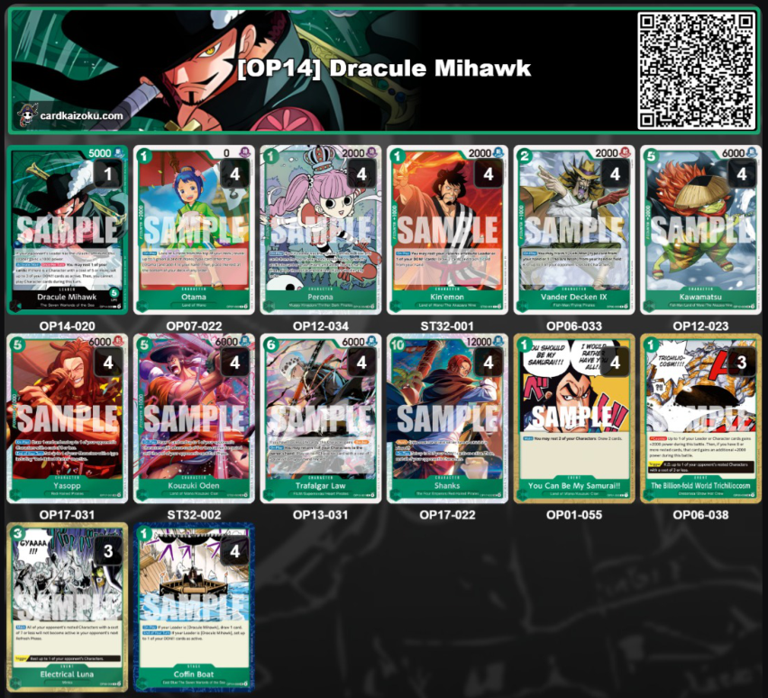
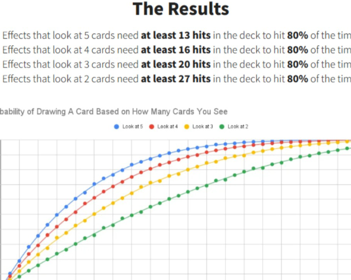
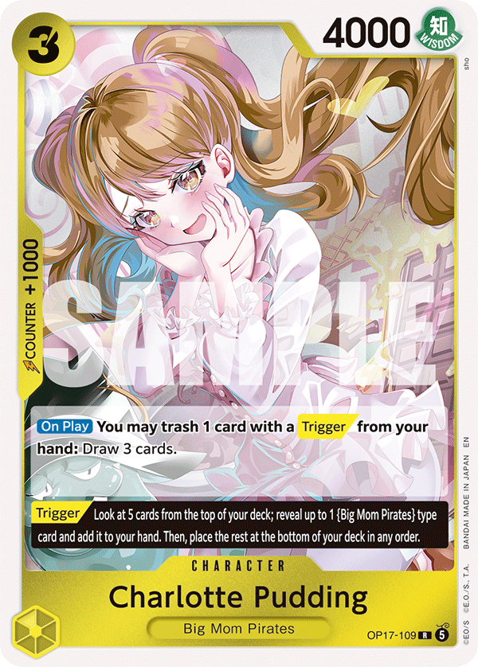
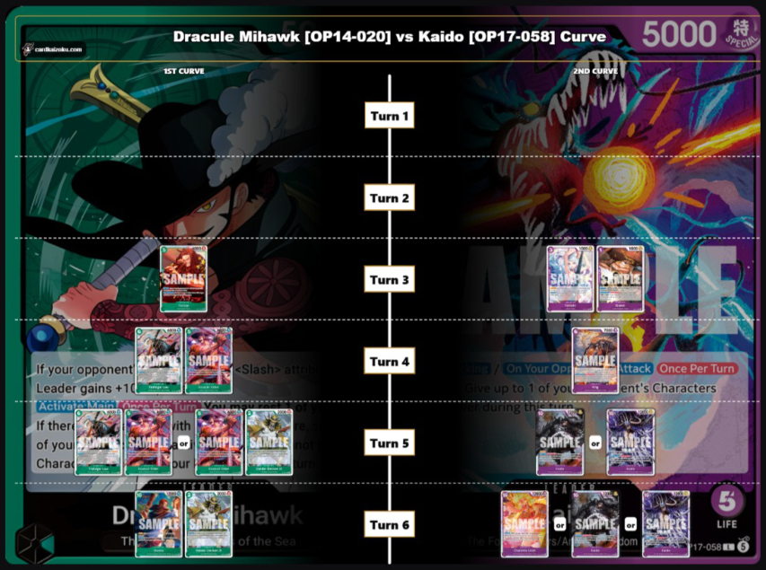

What is Mihawk?
In testa a ogni sezione la sintesi in italiano; sotto, la trascrizione verbatim spezzata in blocchi di poche frasi (le parole dell'autore non cambiano).
What is Mihawk?
- Mihawk scamma 3 DON gratis ogni turno da quando c'è in campo un personaggio di costo 5 o più.
- Con il pacchetto Wano (ST32 Oden e ST32 Kin'emon) il mazzo è passato da mid-range a controllo combo-centrico che pesca a valanga.
- Il verde ha sempre avuto tanti tool ma poca consistenza: il motore di pesca risolve il problema per numero di carte viste.
- Forza attuale: tenere 10+ carte in mano e pescare la curva — 6c che sviluppa un 5c, due corpi a turno, vantaggio di carte e board.
- Il brick del draw engine non è una debolezza esclusiva di Mihawk: capita a tutti i mazzi.
- Le 3 vere debolezze: è il top deck (tutti si preparano, tech come Black Rope Dragon Twister), serve un meta risolto per scegliere i tech, e il matchup spread è pari o da tiro di dado → decide la bravura del pilota.
Just like in the description, I am once again prefacing here that I hope that you already know the basics of the OPTCG. If you don't please watch someone's fundamental guide, I recommend Fleche's.

OP14-020Mihawk's Identity
Mihawk is a leader that gets to scam 3 don for free every turn starting from when any character that is considered 5 cost or higher is played onto the board.
Historically this was used to make Mihawk primarily a mid-range deck due to his ability to attach this Don onto his mid-range bodies or his leader for multiple 7-8k swings every turn.
However in the current iteration where 2 essential cards with the Wano typing have been released (ST32 Oden & ST32 Kin'emon), the Wano package is abused to draw a bunch of cards and filter through your deck.
This allows you to play a combo centric control style as you are able to consistently search and draw into the cards you need to interact with your opponent's board.
Green has always been a color known for having many tools but being very inconsistent. With the card draw engine Mihawk is able to resolve this issue by sheer number of cards drawn.
What is Mihawk's Strength?
When you are able to regularly hold 10+ cards in hand, I believe Mihawk's strength has shifted to consistently drawing into his curve. Your curve primarily consists of playing a 6c that allows you to develop a 5c. Then the 5c allows you to interact with their board by resting, preventing resting, or preventing attacking.
This allows you to regularly accrue both card advantage in the form of counter and board advantage as you are developing two bodies every turn. You will then utilize the number of cards you have to play combos or efficiently counter out of swings.
What is Mihawk's Weaknesses?
As I touched upon earlier Mihawk's weakness is when he is inconsistent and you brick your draw engine by not drawing any parts of it. However it is a common misconception that this is a Mihawk specific weakness.
ALL decks occasionally draw hands like this which is a inevitable aspect of playing a card game.
I would actually say that the amount of options Mihawk has to draw cards allow him to mitigate this better than most other leaders. It is simply the difference between when you are drawing 4 extra cards early vs when you only draw 1 that exemplifies this issue.
Mihawk has 3 true weaknesses specific to him in the current meta:
- He is perceived as the top deck in the meta which means that most people going to any event will be preparing their decks in preparation for you. This can lead to you falling prey to unexpected tech cards like Black Rope Dragon Twister or other versions of Gravity Blade.
- Mihawk is a deck that benefits from having a well established solved meta so you can bring tech cards specific for those matchups. Green having a variety of tools is definitely a positive, but a wide and varied meta means that it is difficult to pinpoint which tools to bring to any specific event.
- As a result of 1, you have a mostly even or dice roll dependent META matchup spread. Although you have few completely free matchups and have kicked many decks out of the meta entirely, people will be less likely to bring decks unfavored into Mihawk to big tournaments. This means that a pilot advantage will be the key differentiator that allows you to win most of your games.
Continue to next page →
Mihawk Basics Cards & Decklist
Cards & Decklist
In testa a ogni sezione la sintesi in italiano; sotto, la trascrizione verbatim spezzata in blocchi di poche frasi (le parole dell'autore non cambiano).
Cards & Decklist
- Lista scelta per consistenza: picchi più bassi, ma gameplan solido è ciò che porta al day 2.
- Più Luna del solito perché il matchup più frequente previsto è il mirror Mihawk.
- Gameplan: pescare tantissimo, andare largo di board con 6c Law, e nel late avere Shanks + Decken o Shanks + Luna.
- Sei 4 corpi largo al primo turno da 10 DON: a volte devi giocare sopra il tuo 5c da 6k per rimuovere i loro corpi.
Current Decklist

Trascrizione dell'immagine
- 1x Dracule Mihawk (OP14-020) — Leader, 5000
- 4x Otama (OP07-022) — cost 1, power 0
- 4x Perona (OP12-034) — cost 1, power 2000
- 4x Kin'emon (ST32-001) — cost 1, power 2000
- 4x Vander Decken IX (OP06-033) — cost 2, power 2000
- 4x Kawamatsu (OP12-023) — cost 5, power 6000
- 4x Yasopp (OP17-031) — cost 5, power 6000
- 4x Kouzuki Oden (ST32-002) — cost 5, power 6000
- 4x Trafalgar Law (OP13-031) — cost 6, power 6000
- 4x Shanks (OP17-022) — cost 10, power 12000
- 4x You Can Be My Samurai!! (OP01-055) — Event, cost 1
- 3x The Billion-fold World Trichiliocosm (OP06-038) — Event, cost 1
- 3x Electrical Luna (OP08-036) — Event, cost 3
- 4x Coffin Boat (OP14-039) — Stage, cost 1
Total: 50 cards + Leader
This is the current list I am using the most right now. As said in the previous section, the most important thing to me is consistently playing a strong gameplan.
Although there will be lower highs with this decklist, having a consistent gameplan is the most important aspect to make day 2 of events.
Also I predict the most common matchup to be the Mihawk mirror which is why I have made certain choices like playing more Lunas.
Allthough basic, I will note our general gameplan is to draw a ton of cards, play a wide board through 6c Law, and in the late game have the pieces to deal with their board whether that is through Shanks + Decken or Shanks + Luna.
It's important to note that because you are going 4 units wide by your first 10 don turn, sometimes you may need to play over your 5c6k body to effectively remove their bodies. This will come up multiple times in the MU sections.
Key Cards
Card Draw

OP12-034OP12 Perona
- Searcher principale: trova tutto tranne Yasopp e Vander Decken — se cerchi quei due, non giocarla.
- È il bersaglio preferito da rimbalzare con 6c Law, per rigiocarla il più possibile e ciclare il mazzo.
- Con 28 hit la probabilità di whiffare è bassissima, ma può succedere.
- Ciclare il mazzo ti dà informazione completa: sai esattamente cosa c'è nelle tue vite.
Testo integrale
This is the decks premier searcher, which allows you to search every card except Yasopp & Vander Decken. This means that if you are looking for one of those 2 cards DO NOT play Perona. Generally this is my 6c Law target to bounce as I want to play this card as many times as is reasonable in a game so I can eventually cycle my deck with to have full information and know exactly what is in my life.
With 28 potential hits, the chance of whiffing a Perona search is astronomically low but can happen.

OP07-022OP07 Otama
- Searcher Wano da 2k counter, trova 16 carte (Kin'emon, Oden, Samurai, Kawamatsu).
- Di solito la giochi per cercare Samurai o Oden, se non la usi come counter.
- Nei matchup dove ti serve munizione per Vander Decken, prendi Kawamatsu senza esitare.
- Tieni il conto di quanti Kawamatsu mandi in fondo: con 4 Decken da usare non vuoi restare senza fodder.
Testo integrale
The deck's 2K COUNTER Wano searcher that allows you to find 16 Wano cards (Kin'emon, Oden, Samurai, Kawamatsu). Generally you will be playing this card to look for either Samurai or Oden if not using it to counter.
In matchups in which you need ammo for Vander Decken to kill big bodies do not hesitate to grab Kawamatsu or at least keep a mental note in how many you are bottom decking. If you need all 4 Decken's, you would hate to run out of ammo in the scenario you trash all your Kawamatsu's for counter.

ST32-001ST 32 Kin'emon
- Carta obbligatoria: ti sbricca durante tutta la partita e sui restand da 2 DON di Shanks.
- È un weenie card neutral che filtra il mazzo e alza le chance di pescare le carte chiave.
- Padroneggiare lo scarto di questa carta ti fa vincere partite in più.
Testo integrale
Required card as it helps you unbrick you throughout the game and through the 2 don Shanks restands. It's a card neutral weenie that helps you filter through your deck and increase the chances of you drawing your key cards. Mastering the trash effect of this card will help you win extra games.

OP01-055OP01 You Can Be My Samurai (YCBMS/Samurai)
- È il Pot of Greed del mazzo: vai +1 e rendi il mazzo 4 carte più sottile.
- Insieme a Kin'emon ti permette di trovare comodamente le carte non cercabili.
- Puoi estrarre valore da carte che non possono attaccare o appena giocate e non minacciate dal board avversario.
Testo integrale
Pot of greed from Yugioh or Sanji's Pilaf from OPTCG. Being able to go up one card in a game reliant on cards in hand while making your deck 4 cards less is insane if you can reach the activation conditions.
This card in conjunction with Kin'emon allows you to comfortably find your unsearchable cards. You can also get value from cards that cannot attack or cards you just played that are under no threat from the opponent's board.

OP14-039OP14 Coffin Boat (Boat)
- Per un totale di 4 DON rendi il mazzo 4 carte più sottile, e ogni turno ti rialza un DON: giochi con 14 DON.
- Mazzo sottile = vedi più spesso le carte forti; se pensi che la Luna 3c valga più della sottigliezza, prima cerca altro da tagliare.
- L'autore lo gioca a 4 copie per massimizzare la consistenza, e comunque ci sono partite in cui non lo vede.
- Non vedere il Boat presto ti azzoppa nel piazzare counter event nel mid-game e persino la YCBMS, perché dovrai riposare personaggi per il DON.
Testo integrale
The boat is one of the best cards in Mihawk's package as for a total of 4 Don you are able to make your deck 4 cards less. It also restands a Don for you every turn so you are playing with 14 Don. In almost every deck building game you can see the value of having a very thin deck as you are able to see the stronger cards in your deck more often.
If you believe that a card such as 3c Luna is worth so much more than running a thinner deck first look at the rest of your deck to see if there's anything that you can cut instead.
I prefer maximizing consistency so it's currently at a 4 of in my deck but even then there are games where it never shows up in my hand.
Not seeing a Boat early handicaps your ability to effectively deploy your counter events throughout the mid game and even your YCBMS event as you will need to rest characters for Don.
The Fishes

OP06-033OP06 Vander Decken IX (Decken)
- Non cercabile ma cruciale in un meta senza KO protection e pieno di corpi enormi (9+ di costo).
- La KO protection esistente sta su piccoli weenie: con Shanks 10c ci swinghi sopra e la uccidi prima di giocare Decken.
- Altrimenti è il tuo primo 1k da buttare in matchup come ST30 Luffy & Ace o Penel.
Testo integrale
Unsearchable card but extremely pivotal in this meta without KO protection and a ton of HUGE bodies (9+ cost). Existing KO protection being baked into small weenie cards means that in combination with 10c Shanks you can just swing into the KO protection and KO it before you play Decken. Otherwise it's your first 1k to toss into MU's like ST30 Luffy & Ace or Penel.

OP12-023OP12 Kawamatsu
- L'altro 2k counter del mazzo, cercabile sia da Otama che da Perona.
- Serve anche da fodder per il bazooka Decken.
- È un corpo di riserva da giocare a 5 DON o con 6 Law: se sei brickato, meglio piazzare un corpo che pescare 3-4 carte.
Testo integrale
The deck's other 2k that is searchable by both Otama & Perona. It also serves as fodder for the bazooka named Decken. It's also a backup body to be played on 5 don and off 6 Law. Be open to it if you brick on everything else. It's better to establish a body on 5 don than to draw 3-4 cards.
Actual Bodies

ST32-002ST32 Kouzuki Oden (Oden)
- È la carta che ha riportato il mazzo in auge, così da poter combattere contro P Enel.
- Colpisce il costo base 6, quindi interagisce con quasi tutto il pacchetto Elbaph.
- Pesca una carta, quindi non c'è alcun downside a piazzarlo come corpo.
Testo integrale
The card that propelled the deck back into relevance so it can actually fight against the overlord named P Enel. It hits base cost of 6 so it can interact with most of the Elbaph's package's characters. It also draws a card so there's no downside to establishing it as a body.

OP17-031OP17 Yasopp
- Come Oden, ma proattivo: abusando dei 3 DON rialzati dal leader KO-i i personaggi avversari.
- Pochi mazzi possono permettersi di proteggere 8 a 6 o 7 a 5 al loro turno 3.
- Si rialza ogni turno: non può essere Luna'to senza prima essere riposato e attacca ogni turno gratis.
- È il bersaglio principale dell'effetto leader a 5 DON: andando primo giocalo prima di Oden, gli swing gratis valgono più di un attacco fermato.
- Può anche rialzare il boss del mazzo per proteggerlo da Decken nei mirror o dalla riduzione di power.
Testo integrale
Everyone calls him a deadbeat dad but he's been my GOAT since he was revealed. He's like Oden except you can play him to proactively KO the opponent's characters by abusing the 3 DON you restand with leader ability.
Few decks can afford to protect 8 at 6 or 7 at 5 on their turn 3. He also restands every turn which means that he can't be Luna'd without getting rested & can attack every turn for free.
He doubles as the premier target for your leader effect on 5 DON as well. If you are forced to go first, play this card first on 5 Don as over the course of a game you will get more value from the free swings than the 1 stopped "attack" from Oden. If you only have 1 of each I would still play this card first, do not undervalue the ability to restand every turn.
This card can also restand the deck's main boss monster to protect it from Decken in mirrors or power reduction later.

OP13-031OP13 Trafalgar Law (6Law)
- Rispetto al 6c Mihawk: Law ti garantisce una carta indietro rimbalzando un weenie, cala Yasopp, e nel late diventa blocker.
- Yasopp è quasi sempre meglio della Perona 5c perché fai qualcosa di proattivo invece di stallare un turno.
- Fai una giocata card neutral sviluppando due corpi da 6k e riposando un personaggio avversario.
- Svantaggi rispetto al 6Hawk: quello milla ogni volta che riposa e ha statline 7k.
- Difetto maggiore: la carta esce riposata, quindi niente Samurai e sei esposto a swing grossi o riduzione di power — ma Yasopp annulla del tutto questo difetto.
- Anche contro mazzi gialli riesci spesso a stabilizzare dietro 1-2 Law.
Testo integrale
This option is often compared to the 6c Mihawk as they both are characters that further your primary gameplan of double developing your board through a 6c and a 5c.
The benefit of this card is that Law guarantees you a card back through bouncing a weenie, can play out Yasopp, and can become a blocker later.
I almost always find Yasopp to be more valuable than 5c Perona because you are able to do something proactive rather than just stalling 1 turn.
It also draws you a card so the comparative play is that you're going card neutral while developing 2 6k powered bodies and resting an opponent's character.
In extreme late game scenarios the blocker effect of this card can be very relevant to keep you alive for that one last turn. You can often stabilize behind 1-2 of these despite being vs yellow decks.
The detriment of this card compared to 6Hawk is that 6Hawk is able to mill a card every time it rests and it boasts a 7k base statline.
I believe that the card you get back instantly (ideally Perona) not only gives you more value than the mill but also provides more consistency+card advantage.
The last and perhaps greatest detriment of this card is that the card comes out rested which means that you are unable to play Samurai and the card you play is vulnerable to large swings or power reduction. Fortunately my GOAT Yasopp removes this detriment completely.

OP17-022OP17 Shanks
- In Mihawk si legge 5c 12k rusher: l'autore non ha ancora trovato un caso in cui non convenga giocarlo per il lethal.
- Correzione dell'autore: se il leader avversario è 8k o più, NON è più efficiente.
- Riposa tutti i personaggi avversari: insieme a Luna e Decken controlli qualsiasi board.
- È quasi sempre la giocata migliore a 10 DON o in risposta a un corpo grosso, ma devi preparare in mano le carte combo che lo accompagnano.
Testo integrale
This card is super broken because in Mihawk specifically it reads 5c 12k rusher. I have yet to find a situation where it is NOT efficient to play this card when going for lethal. (Edit: If opponent leader is 8k or more it is NOT more effecient) Not only is it a 5c 12k rusher it also rests all of the opponents characters which in conjunction with the Green tools of Luna & Decken allow you to control ANY board state.
This is almost always your best play on 10 don or in response to an opponent's big body. However the reliance on combo cards to get maximum value out of this card means that you need to prepare your hand with its accompanying combo cards.
Events

OP08-036This card combined with 10c Shanks has kicked so many decks out of the meta that it's quite frankly absurd.
This one card's cost works perfectly with Mihawk's leader effect and it's main allows you to spend the 3 Don to save minimum 2 cards if not more.
There are alternative cards such as IKYS which I will cover in the tech card section but I think that the ceiling of this card makes me prefer it.
As the mirror is your most prevalent matchup currently, chaining this card can stop more than 20 Don worth of bodies from attacking you. 3 Don to stop 20.
This card is also great at abusing yellow decks as well as people who want to be unique with random decks such as ST30 Luffy & Ace. Having it allows you peace of mind vs the weirdos bringing Tier 2 and below decks to the tournament.

OP06-038OP06 The Billion-fold World Trichiliocosm (4k Event/Trichiliocosm)
- È un evento da 4k ad altissimo valore: è l'intera abilità leader di OP17 Whitebeard, e tu ne giochi 4.
- Spesso si gioca Perona apposta per cercarlo nel late.
- Ne giochi di più quando temi i mazzi unblockable come Boa, che minacciano swing da 22k unblockable.
- Utilissimo quando vogliono controllarti il board e chiederti 2 carte: con un DON su (di solito dallo stage) eviti di dare tre 1k.
Testo integrale
It's a 4k event that you get a ton of value out of. This card is OP17 Whitebeard's entire leader ability and you can play 4 of them. Perona is often played to search for this card in the late game.
You will play more counter events when you are afraid of unblockable decks like Boa who will threaten you with 22k unblockable swings. It's also super useful in situations where people want to control your board and ask you for 2 cards.
Every 2k in your deck has a purpose that could see it played so having this card and a Don up (usually from stage) saves you from having to give 3 1ks.
Continue to next page →
Mihawk Basics TECH CARDS
TECH CARDS
In testa a ogni sezione la sintesi in italiano; sotto, la trascrizione verbatim spezzata in blocchi di poche frasi (le parole dell'autore non cambiano).
TECH CARDS
- Elenco delle altre carte giocabili e del perché non sono nella lista, ordinate per quanto sono popolari altrove.
- Il pacchetto supernova ora è semplicemente peggiore: i migliori 5 drop e le top end non ne fanno parte.
- Storicamente il supernova perdeva già contro il pacchetto Wano, anche prima dei buff di OP16.5.
- Criterio di scelta: il mirror è il matchup più importante, quindi le carte che lì non fanno nulla restano fuori.
This section is a list of other viable cards in this deck and WHY I have not chosen to use them in this iteration. I will update the deck list if I choose otherwise with reasoning.
I will try to order the tech cards by how popular they are in other decklists. Also in general the supernova package is just worse now that the best 5 drops and big drops are not in it.
It also historically always lost to the Wano package even before the 16.5+ buffs and mirror is the most important MU in my opinion.
 Dracule Mihawk
Dracule Mihawk ST32-003ST32 Dracule Mihawk (6Hawk)
- È il dibattito principale della lista: 6Hawk o 6Law?
- Pro: milla ogni turno, corpo da 7k, e la carta che cala esce in piedi (quindi puoi YCBMS per un +1).
- Il mill conta di più se giochi molte copie singole/doppie e carte morte in certi matchup; nella lista dell'autore invece serve quasi tutto e il resto fa counter.
- La Luna è l'unico vero brick, e si gioca comunque quasi gratis per salvare 2 carte.
- Con tanta riduzione di power nel meta non vuoi lasciarlo riposato: verrebbe rimosso il turno dopo.
- Il 7k base chiede 2 DON invece di 1 a RG Luffy e blocca il Lightning Dragon gratis di P Enel, ma nessuno dei due mazzi è rilevante; e non lo giochi nel late.
Testo integrale
This is the most common point of debate within the Mihawk decklist. Should we play the 6Hawk or the 6Law? As someone who didn't play Mihawk in 16.5 I have no illusions about the power of this card.
The benefit is that you can mill every turn, it's a 7k body, and the body you play comes out standing. Not only do you obtain a benefit from resting it for leader ability you can also use YCBMS to rest it+what you played for a +1 card to hand.
The milling card effect is also more relevant when you are playing many 2 of cards as well as a ton of bricks or cards you don't want to see in your hand in certain MU's.
It helps you find your unsearchable cards and removes the ones that are dead in certain matchups. In my decklist though I need almost every card or when I don't need it then it can just be used as counter.
Luna is my only true brick and that card can always be played for essentially free to save me 2 cards. The amount of power reduction in the meta often means that you don't want to leave this card rested as it will most likely be removed on the following turn. This also reduces the impact of the following benefit....
The last benefit of 6Hawk is that it's power starts at 7k which means that against RG Luffy they need to give you 2 don instead of 1 without any investment.
It's also relevant against P Enel so they can't Lightning Dragon you for free without any other invested resources. However, NEITHER of these decks are extremely relevant in the meta.
In the mirror asking for a 2k instead of a 1k is nice but realistically 6Hawk will only swing once maybe twice as it will be frozen for the rest of the game.
You also can't play this card late game as there is no benefit to your hand unless it's just completely full of bricks.
If this card had all types of removal protection baked in maybe I would play it but as it is I can supplement the missing power with Don from leader ability.
The detriment's have already been stated but the following card is a required addition if you decide to play it.
 Perona
Perona OP14-033OP14 Perona
- Utilissima per stallare contro un board largo e piccolo, e non può essere KO'ata.
- Nel mid-game però serve a poco: il loro personaggio si rialzerà o potrà attaccare comunque, hai solo ritardato.
- Occupa lo stesso slot di Yasopp, ma non pesca e non fa nulla di proattivo.
- Come il 6Hawk nel mirror: bello che non si rimuova, ma viene congelata, ci giochi sopra, e non rialza il tuo Shanks 10c.
Testo integrale
This card is extremely useful if you need to stall the game vs a wide and small board. It also can't be KO'd as there are a variety of annoying cards that could come out from its On KO effect just like OP14 Hogback.
Unfortunately for Perona I don't think playing this card in the midgame is all that useful as their character will probably eventually restand or be able to attack so all you did was delay.
As it takes the exact same slot as Yasopp in most cases I can't help but see that it doesn't draw me a card and doesn't do anything proactive.
Similar to 6Hawk in the mirror, it's nice that it can't be removed but it will quickly be frozen, played over, and ultimately doesn't restand your 10c Shanks.
 Law & Bepo
Law & Bepo ST24-004ST24 Law & Bepo (L&B)
- Ottima contro i mazzi che ti mandano tanti colpi di power basso.
- Nel mirror può saltare i turni dell'avversario, visto che la statline da 6k è lo standard.
- Difetti: non fa rush e non risolve in modo permanente il corpo grosso avversario.
- Buona nel turno prima del lethal o al primo turno da 10 DON andando secondo, ma le occasioni sono troppo poche.
- Se il matchup Black Luffy diventasse troppo duro, l'autore la giocherebbe apposta per quello.
Testo integrale
This card is extremely useful against decks that will just send many small powered hits against you. In the mirror it can act as a way to skip your opponents turns as the 6k statline becomes meta.
However, it doesn't allow you to rush AND doesn't permanently deal with the opponent's big body.
It can be great on the last turn before lethal or the first 10 don turn going second but otherwise I think that the chances for you to play this card is too little. If the Black Luffy MU becomes too difficult I may play this card specifically for it.
 Hody Jones
Hody Jones OP06-035OP06 Hody Jones
- Il fishman originale rotto del verde: fa da fodder per Decken, quindi non è un brick se Decken è vivo nel matchup.
- Ti permette di usare Decken un turno prima, a 9 DON.
- Problema: è più utile proprio nei matchup dove non vuoi prenderti vita (Elbaph Sabo, Luffy) perché ti attaccano tanto.
- Il rush garantisce il kill e l'effetto di riposo prepara un secondo, ma il costo in vita è troppo alto ed è raramente meglio di Shanks 10c per il lethal.
Testo integrale
This fishman is the original super broken green card. Not only can it be used as fodder for the Decken combo meaning it technically isn't a brick if Decken is a live card in the MU, it also allows you to use Decken one turn early on 9 don.
Unfortunately this card is also the most useful in matchups where you don't want to take your own life like Elbaph Sabo or Luffy where they attack you a lot.
The rush guarantees it gets a kill and the resting effect can do a lot of work towards a second one, but the life cost is generally too high and it's rarely better than 10c Shanks when going for lethal.
 Smoker
Smoker OP10-030OP10 Smoker
- Il suo restand di DON non si sovrappone a quello del leader: libertà enorme per combinare searcher e giocare YCBMS in più.
- Ha il raro Banish e una statline da 7k su un corpo da 5c.
- Ottima come batteria di DON per pescare, e rende benissimo contro il giallo, molto dipendente dai trigger.
- È però un brick: ne trai valore solo andando primo esattamente a 5 DON, o se l'avversario salta il turno (e lì sei già avanti).
Testo integrale
This card is commonly played as the Don restanding effect DOES NOT overlap with the leaders. This allows you a ton of freedom in combo'ing your searchers to allow for extra YCBMS events to be used.
It also has the rare Banish keyword as well as a 7k statline on a 5c body. This card is extremely good as a Don battery to enable extra draw and also performs amazingly against yellow as they are extremely reliant on triggers in the past couple sets.
Unfortunately this card is a brick and compared to the other 5 don options you only see value from it going first exactly on 5 don or when your opponent misses their turn.
However if they miss their turn you're already ahead so aside from having another good 5 drop to play it's too difficult to get value out of this card if it will be removed on the following turn.
ST16-004ST 16 Shanks (Pop Shanks)
- L'autore lo giocava spesso prima che Decken si diffondesse.
- Prima che Yasopp diventasse popolare rubava mirror rialzando i corpi congelati e uccidendo quelli in rush; ora succede meno.
- Nel meta attuale serve soprattutto contro P Kaido, ma con la tecnologia dei fish quel matchup è ormai banale.
- Potrebbe avere senso come turno da 9 DON nel mirror, ma lì l'autore valuterebbe piuttosto il Mihawk 9c.
Testo integrale
I was playing this card quite often before Decken was popularized.
Also before the Yasopp got popular I was sneaking mirror wins by restanding my frozen bodies and popping their rush ones with him but now this happens less often as Yasopp is much more popular.
In the current meta he's primarily useful into P Kaido as they will be unable to get value with their first 10c Blocker Kaido outside of the don restand.
However with the fish technology that matchup has been trivialized and I don't think this tech card is necessary for that MU.
I could see this card being relevant in the mirror as a 9 don turn but even then I might consider 9c Mihawk for that specific purpose. It can be into matchups reliant on their boss monsters like Elbaph decks but that will require more testing.
OP14-027OP14 Shanks
- Ottimo se riesci a impilarne più di uno, soprattutto andando primo.
- Ti fa interagire col board avversario appena scende, come lo Yasopp 5c.
- Nel mirror rende i loro corpi 5 invece di 6, impedendogli di attaccarti se vogliono pescare on curve.
- Problema: non regge, muore all'attacco dello Shanks 10c o a Decken + Law a 8.
- Come 9Hawk e 6Hawk devi riposarlo subito per averne valore, e c'è troppa rimozione di power proprio dove sarebbe buono.
Testo integrale
This card is great when you can stack multiple especially going first. It also allows you to freely interact with your opponents boards the moment comes down similar to 5c Yasopp.
It's also useful in the mirror as their bodies will be 5 instead of 6 preventing them from attacking you if they want to draw cards on curve.
The issue is even in the mirror it won't stick as it'll simply die to the 10c shanks attack or Decken Law on 8. If you are able to stack 2 you can effectively prevent Sabo's Elbaph weenies from attacking as his "plays" consume most of his don but this is also a difficult scenario to present due to the power reduction on 1c Robin.
However, just like with 9Hawk and 6Hawk you need to rest this card immediately to get value from it which wouldn't be an issue if there's wasn't so much power removal in the matchups it's really good in. It's resting benefit towards lethal is also gone now that 10 Shanks just rests everything with no constraints and can rush at 5c.
 Jewelry Bonney
Jewelry Bonney OP07-026OP07 Jewelry Bonney
- Si usa come carta da stallo per rompere la curva ai mazzi che vanno molto in alto, come quelli con Linlin 10c, o nel mirror andando primo.
- Giocarla però ti espone a un turno estremamente debole.
- L'autore preferisce di gran lunga la pesca di Yasopp/Oden, e pensa che Luna allunghi la partita più efficientemente.
- Probabilmente è una delle migliori giocate a 9 DON perché impedisce il 10c avversario, ma non è sicuro sia una carta che ribalta il mirror.
Testo integrale
This card is primarily used as a stall card to disrupt curves vs decks that go extremely tall like 10c Linlin decks or even in the mirror going first.
However playing this card exposes you to an extremely weak turn and once again I am valuing the card draw in Yasopp/Oden much more highly that this card.
The use cases seem small right now and I think Luna can extend the game more efficiently than this card.
While it probably is one of the best plays on 9 Don as you prevent your opponent from dropping their 10c bomb, I'm not sure this is a mirror breaker card that flips the matchup to be favored for whoever can delay the opponent 10 don turn.
As of now with Yasopp I believe with solid play, yellow decks are favored so I don't feel the need to tech this in for them quite yet but it MAY be very good in the mirror.
OP14-119OP14 Dracule Mihawk (9Hawk)
- Un tempo ottimo sulla curva dispari e per sbriccare.
- Oggi c'è troppa riduzione di power in ogni colore perché riesca a portare valore.
- Può essere bersaglio di YCBMS e sistema la curva, ma i target da 9c o meno che vuoi solo impedire di riposare (invece di uccidere) sono troppo pochi.
Testo integrale
While this card was once amazing on the odd curve and to unbrick, there is simply way too much power reduction available to every color/deck to allow this card to sufficiently get value. It can be a YCBMS target and fixes curve but the amount of 9c and below targets you need to stop from resting instead of simply KILLING is just too low.
 Kikunojo
Kikunojo OP14-023OP14 Kikunojo (Kiku)
- È un 2k counter che è restandabile, Slash e Wano: quindi tutte le carte possono cercarlo.
- Il suo scopo è rendere Otama più giocabile e farla whiffare meno.
- Il restand è comodo perché garantisce un corpo da rimbalzare col 6Law, ma in quasi tutti i matchup ci finisci sopra.
- Darebbe un altro corpo da riposare per l'effetto leader, ma con 4 stage quello è già coperto — e lo stage è card neutral e giocabile col DON rialzato.
Testo integrale
This is a RESTANDABLE, SLASH, & WANO 2k counter which means all cards can search this. I see the purpose of this card vs other ones as making Otama more playable and whiff less.
The restand effect is definitely nice as you can be confident that you will have a body to bounce with 6Law but you do eventually play over this card in most matchups. This card would probably be only above Kin'emon on the list of 6Law targets. It also provides another body to rest for leader effect but I play 4 stage so IDEALLY I already have that covered.
Stage is also playable off the restood Don and is card neutral so the purpose of the card is neutered. All in all it's a good 2k but if I had to play one I'd probably play the next card.
ST32-005ST32 Roronoa Zoro
- Oltre a essere un 2k, è ottimo a 3/4 DON contro i mazzi basati su weenie come P Enel o gli Elbaph.
- Come per L&B non serve, perché non è rilevante nel mirror.
- Se P Enel diventasse un problema, l'autore taglierebbe qualche YCBMS per giocarlo.
- Bonus: gli si possono attaccare DON di nascosto, così swinghi più di 2k su un weenie importante subito dopo averlo giocato.
- Difetto: non colpisce il costo base 2, il che lo rende meno valido contro Black Luffy.
Testo integrale
This card is not only a 2k but also very good on 3/4 Don into decks that rely on weenies such as P Enel or Elbaph decks. Similar to 10c L&B I don't see a need for it as it's not super relevant in the mirror.
To get value you need to rest it and the decks it's good into currently have manageable matchups.
Playing this card means cutting into consistency but if P Enel becomes a problem I may cut some YCBMS to play this card to lower hand size & deal with their board.
A side benefit into those matchups is that this card can sneakily get don added to it so you're swinging more than just 2k at an important weenie right after playing it.
Unfortunately this card does not target base cost of 2 which makes it slightly less valuable into Black Luffy.
 Strive to Surpass me
Strive to Surpass me OP14-036Roronoa Zoro!!! OP14-036OP14 Strive to Surpass me, Roronoa Zoro!! (OP14 4k)
- È uguale al Trichiliocosm, ma con un effetto più difficile da usare nel late e più facile nel mid.
- Lo considererebbe se i mazzi unblockable alti diventassero più rilevanti.
- Non giocato principalmente perché l'effetto è comparativamente più scomodo da attivare.
Testo integrale
This card is the same as Trichiliocosm but with a slightly more difficult effect to use in the late game but easier to use in the mid game. If tall unblockable decks became more relevant I would consider playing this but there are better tech cards to add. Mainly not played because of the effect being difficult to use comparatively.
 For Fun
For Fun OP14-037OP14 For Fun
- Oggettivamente migliore della carta precedente grazie all'activate main che colpisce i corpi da 7k base.
- La proattività ti fa gestire carte problematiche come Pirate Docking 6 e Jaguar D. Saul.
- Nel mirror, però, il tuo gameplan non la usa spesso: per questo è stata tagliata a favore di più Luna.
- Il 3k non è un gran difetto: sapendo che 1 DON in piedi = 4k counter, quasi nessuno swinga 8k se non è obbligato.
Testo integrale
This card is just objectively better than the card right above due to its activate main affecting 7k base power cards.
Once again I value the proactivity attached to this card which actually allows you to deal with problematic cards like Pirate Docking 6 and Jaguar D. Saul.
However due to your gameplan in the Mihawk mirror I don't think this card is used that often in your most important MU. Thus I have cut this card in favor of more Luna's.
Also because people know that usually 1 Don standing = 4k counter they will almost never swing 8k if they don't have to which means the 3k power is not a HUGE detriment.

OP13-040OP13 I Know You're Strong So I'll go All Out from the Very Start!!!! (IKYS)
- È una Luna che colpisce solo 2 corpi, ma con 3k counter attaccato.
- A inizio formato era buona con un meta vario; poi è risultata peggiore di Luna nel mirror, dove il trigger di Luna conta.
- A 2-3 copie l'autore non si è mai brickato al punto da preferire il 3k counter, quindi l'ha tagliata per Luna.
- La riconsidererebbe solo con un meta fermo a 2 corpi (tipo Kaido viola); col board largo attuale Luna vale di più nello stesso slot.
Testo integrale
IKYS is Luna that only affects 2 bodies but has 3k counter attached to it.
At the start of the format I was playing it when there were a variety of decks but as I played more I realized the card is just worse than Luna in the mirror and the trigger is actually relevant.
At 2-3 copies I've never been bricked up by Luna to a point where I would rather have 3k counter and so I've cut this card for Luna.
Again if I needed more bodies and the meta was stuck to 2 bodies it could affect (think purple Kaido) I would consider this card. However with the current very wide board meta assortment Luna is just more valuable and it takes up the same slot.
End of List
- Questi sono tutti i tech card rilevanti che un giocatore Mihawk può considerare.
- L'assortimento di blocker weenie è stato spazzato via dalla popolarità dello Shanks 10c.
- L'autore invita a scrivergli su X, Twitch o Discord per altre carte o opinioni contrarie.
Testo integrale
I believe that's all the relevant tech cards that Mihawk players can consider for their list! The assortment of weenie blockers have been weeded out by the popularity of 10c Shanks. Do let me know on X, Twitch, or on Discord if you have cards you want my thoughts on or disagreeing opinion. I'm always open to a constructive discussion.
Mihawk Basics Card Draw
Card Draw
In testa a ogni sezione la sintesi in italiano; sotto, la trascrizione verbatim spezzata in blocchi di poche frasi (le parole dell'autore non cambiano).
Card Draw
- Ordine dei searcher: Kin'emon turno 1 > Perona > Kin'emon per 2 DON con mano brickata > Otama che probabilmente colpisce > Kin'emon per 2 DON > Kin'emon riposando un leader che può attaccare > Otama improbabile.
- Ordine di riposo per Samurai: Yasopp > Kin'emon > Otama > Perona > Oden > 6 Law.
- Ordine di raccolta col 6 Law: Otama/Perona > Decken > Kin'emon > Yasopp/Oden.
- Kin'emon prima di Perona, sempre: prima la pesca, poi la ricerca informata.
- YCBMS: chiediti se puoi ancora abilitare il 6Law, se ti serve attaccare questo turno, e se potrai giocarla più tardi.
- Entro il primo turno da 5/6 DON vuoi lo stage in campo.
Card Draw
- La pesca è tra i meccanismi migliori del gioco perché la gente assegna valore alle carte: non ti mandano lethal da 20k anche se hai 10 brick.
- Vinci passivamente l'aspetto psicologico della partita.
- Normalmente non vuoi nemmeno giocare Otama; se la giochi, vuoi riprenderla col 6 Law.
- Se i loro attacchi restano al livello del tuo leader o ti serve una giocata per il turno dopo, riprendi la Perona: è una carta che vuoi rigiocare per cercare.
- Apriti alle linee Decken a 8-10 DON ripreso col 6 Law: uccidi un corpo, cali 2 corpi e swinghi grosso.
- Se l'avversario è morto al 100% il turno dopo, gioca Kin'emon riposando il leader invece del DON, e usa Samurai riposando anche lo Shanks 10c.
Testo integrale
In this section I will give you some rough guidelines on how to apply your draw package that are applicable to every MU. MU specific advice & scenarios will be covered later.
Card draw is one of the best mechanics in this game because people assign value to cards so although your hand could be 10 bricks and 4 1k's people will still not send lethal for 20k because IF you have the counter then they will probably lose on the following turn.
It helps you win the psychological aspect of the game passively which is not really spoken about.
This is fellow NebulusTCG member Jasonex64's strongest suit where he is able to accurately determine when his opponent is bricked up and send lethal despite # of cards in hand.
Order of searchers that you want to play:
Kin'emon on turn 1>Perona>Kin'emon for 2 don w/ Bricked hand>Otama Might Hit>Kin'emon for 2 Don>Kin'emon Resting Leader that can Attack>Otama Unlikely to Hit
Samurai Resting Order:
Yasopp>Kin'emon>Otama>Perona>Oden>6 Law
6 Law Pickup Order:
Otama/Perona>Decken>Kin'emon>Yasopp/Oden
Generally you don't want to even play Otama if you can avoid it but in the situations you do, you want to pick it back up. However, in certain matchups if their attacks are consistently gonna be at the same level as your leader or you need a play for next turn; I would prefer to pick up the Perona as it's a card I actively want to search with rather than just counter.
Be open to the lines where you are playing Decken on 8-10 don where you can pick it up with 6 Law. They can be quite powerful tempo swings where you destroy one of their bodies, play 2 bodies, and swing for a large amount.
Also be open to replaying Yasopp/Oden with the 6 Law effect as you will get the card "back" from the weenie you would bounce by simply drawing 1 off their effect.
In the situations you recognize the opponent is 100% dead the following turn, it can make sense to play Kin'emon and rest your leader instead of Don to maximize the number of cards you can draw that turn.
It can also make sense to play Samurai and rest even a 10c Shanks in this situation so do not write off resting Shanks or leader for more cards to unbrick your hand or find enough counter to survive the clapback.
Kin'emon or Perona First?
- Kin'emon prima.
- Meglio risolvere un draw 2 prima di un top 5, perché la pesca non la controlli mentre la ricerca sì.
- Così fai una scelta più informata sulla ricerca.
Testo integrale
Kin'emon first.
It is better to play a draw 2 effect before a top 5 search effect because you are able to control what you draw from the top 5 search but no from the draw 2 effect. You would like to make a more educated decision on your search so you should use your draw effects first when possible.
Kin'emon Trash
- È la decisione più difficile: cosa scartare dipende pesantemente dalla conoscenza del matchup.
- Non aver paura di scartare 2k o eventi da 4k se ti serve il resto della mano per giocare in attacco: si vince attaccando, non difendendo.
- Tra una carta cercabile e una non cercabile, scarta la cercabile (salvo necessità del matchup).
- Il bersaglio principale è uno Yasopp/Oden in eccesso: te ne bastano 2 in totale, gli extra si scartano liberamente nell'early-mid.
Testo integrale
Something I struggle with the most personally is what to discard with Kin'emon. The current way I approach it is heavily based on my MU knowledge. When the first card you play in your game forces you to trash 1 of your very important cards, how do you decide what's the least important?
It once again comes to probability and when you will need the card. In the MU section I will cover key cards and note when you SHOULD NOT discard them ever. Don't be afraid to trash 2k's or 4k events if you need the rest of your hand to play a strong offensive game as you win the game off your offense not your defense.
If the decision is based on trashing either a searchable card or an unsearchable card I will generally defer to trashing the card that is searchable unless it's necessary to win the MU. The main target I trash is an extra Yasopp/Oden knowing that I only need 2 of them total you can freely discard extras in the early-mid game.
Perona or Stage First?
- Nei matchup dove devi tenere il board in piedi per evitare KO immediati (come il mirror), gioca prima lo stage, così riposi quello per il DON invece dei personaggi.
- Altrimenti, se puoi comunque giocare Kin'emon riposando un leader che non può attaccare, Perona prima per high-rollare un Kin'emon dalla ricerca.
- Il motivo è che così puoi vedere 2 carte invece di 1.
- Lo stage lo puoi comunque giocare dopo con il DON rialzato se peschi il Kin'emon.
Testo integrale
In the MU's where you need to keep your board standing to prevent immediate KO's such as mirror, I would play the stage first as you want to be resting stage for Don instead of your characters.
Otherwise, if you can still play Kin'emon to rest a lead that can't attack I would play Perona to high-roll a Kin'emon off the search.
There's a bit more nuance as sometimes in the search you may end up with cards like Luna or 6c Law necessary to win/set up your curve.
However, in these situations I do prefer the Perona first so I can potentially see 2 cards instead of 1. You can also play the stage any time later if you do hit a Kin'emon with your restood Don.
When to use You Can Be My Samurai?
- Prima domanda: posso abilitare il 6Law? Se riposi facilmente i weenie e non possono interagire con quelli in piedi, gioca pure YCBMS.
- Se ti serve pescare un 5 drop o il 6Law, non hai scelta: prima assicurati quelle carte.
- Nei turni col 6Law hai sempre 3 DON extra a disposizione.
- Saltare un turno di YCBMS spesso li costringe a spendere risorse sui tuoi weenie: hai già guadagnato più valore che giocandola.
- Seconda domanda: devo attaccare questo turno? Ogni evento da 1c dopo il restand ti toglie lo swing 5 5, ed è meglio togliere una carta a loro che aggiungerne una a te.
- Terza domanda: posso YCBMS più tardi? Contro una Robin che non ha ancora calato nemmeno un 2k, invece della Perona a 4 DON prova subito a risolvere una YCBMS.
Testo integrale
The very first question to ask yourself when you are considering YCBMS is: CAN I ENABLE 6LAW? If you have the ability to easily rest your weenies and they don't have the ability to interact with any standing ones, feel free to YCBMS!
If you are in the situation where you NEED to draw a 5 drop or you NEED to draw the 6Law in the first place then you simply have no choice as you need to secure the cards before you consider it.
On turns with 6Law you always will have 3 extra don to use. If you skip one turn of YCBMS, the opponent will probably have to spend a bunch of resources on your weenies to deny you from playing it.
At that point you probably have received more value than if you had just played the card and drew 2. An example of this would be:
"Counter 1000
Enel [OP15-058][5000] vs Dracule Mihawk [OP14-020][6000]
Attack Fails
[You] End Turn
[Opponent] Draw 1 Card
[Opponent] Draw 2 Don
[Opponent] Deploy Kin'emon [ST32-001]
[Opponent] Kin'emon [ST32-001]: Rest Don [Don]
[Opponent] Kin'emon [ST32-001]: Draw 2 Card
[Opponent] Kin'emon [ST32-001]: Trash Kin'emon [ST32-001]"
A destra il campo: lato avversario (capovolto) con leader, uno STAGE CARD di costo 3 nella zona stage, un personaggio Dracule Mihawk da 6000 in campo e una carta con testo "Your Turn +1000" nella trash/area eventi; sul lato del giocatore tre personaggi da 2000 schierati (due Kin'emon ai lati e una Perona al centro) più altre carte nell'area di gioco in basso, tra cui una carta viola/rosa e una carta con effetto giocato.
In this scenario consider only the board state, if you choose to YCBMS on this turn you are committing that this is the only one you will play this game.
The opposing PEnel has a multitude of ways to kill your last weenie and prevent you from double developing. I would usually commit to not playing YCBMS and swinging a Kin'emon at Shura and then 5 at lead.
If I only had 2 searchers I would probably swing my leader at his Shura.
The second question to consider is: DO I NEED TO ATTACK THIS TURN? As mentioned in the Don management section; every time you play ANY 1c event after you restand don, you are removing your ability to swing 5 5.
If you swing 8 at 5k lead any player worth their salt will take that attack early, so it's always better to get a card from their hand instead of adding one from yours. By reducing opponents cards in hand you shrink the number of their plays.
The last question to consider is: CAN I YCBMS LATER? YCBMS is an undoubtedly good card to resolve as you only spend 1 Don to go +1 (the cheapest in the game).
It's also true that with the game plan of double developing bodies throughout the game, it becomes more and more difficult to resolve a YCBMS later in the game without losing swings.
If it's a MU where you MUST draw many cards to counter with early or to play perfect curve and you will be unable to effectively YCBMS later; you may want to just play as many as you can hoping that they don't have a good way to respond.
On the flip side if you are playing against a Robin for example who has yet to play even a 2k body, instead of even playing a perona early on 4 don you should immediately attempt to resolve a YCBMS.
Clean resolutions of YCBMS without risking the ability to play 6Law or resolving it multiple times without losing swings can lead to you naturally accruing a card advantage the opponent is unable to overcome.
Playing Stage
- Entro il primo turno da 5/6 DON vuoi lo stage in campo, per poter swingare col leader e avere corpi/DON per Samurai e altri stage.
- Vai molto largo, quindi il tuo obiettivo è prosciugare il counter dalla loro mano con tanti swing.
- Se qualcosa deve morire, attacca prima i DON ai personaggi/leader per assicurarti il kill, poi gioca lo stage.
- Avrai quasi sempre occasione di giocare lo stage e ciclare prima della fine della partita.
Testo integrale
Generally by your first 5/6 don turn you want to have a stage on your board so you are able to both swing your leader and have bodies/don for samurai/more stages.
As you are a deck that goes very wide you are more concerned with slowly draining counter out of their hand through a multitude of swings. If something needs to die and you have a stage in hand that you want to play, make sure you add don to characters/leader to ensure you kill that card before you play stage. You will almost always have a chance to play the stage and cycle before the game ends.
Mihawk Basics Philosophical Guide to Success with Green Decks & Don Management
Philosophy & Don Management
In testa a ogni sezione la sintesi in italiano; sotto, la trascrizione verbatim spezzata in blocchi di poche frasi (le parole dell'autore non cambiano).
Philosophical Guide to Success with Green Decks & Don Management
- Il verde ha sempre avuto tanti tool e poca consistenza: Mihawk la risolve vedendo oltre 20 carte entro il secondo turno.
- Regola di ricerca: guardare 5 carte richiede almeno 13 hit nel mazzo per colpire l'80% delle volte.
- Con 16 target Otama colpisce circa l'87,5% (whiffa 1 volta su 8); Perona con 28 target whiffa 1-2 volte su 100.
- Non inseguire la curva perfetta: massimizza l'EV, perché forzare un turno può brickarti quelli successivi.
- Dopo il turno 3 devi sempre avere 3 DON extra: il restand vieta di calare personaggi ma non eventi e stage.
- Pianifica l'allocazione del DON prima di spenderne uno, pensando anche ai prossimi due turni.
Green's Identity
- Il verde è sempre stato il colore dei tanti tool non leader-locked ma inconsistente.
- Dal set OP08 solo tre mono verdi nel meta: OP07 Bonney, OP12 Zoro, OP14 Mihawk; Zoro rompeva la maledizione perché gli servivano solo 2 carte specifiche.
- Oggi puoi vedere oltre 20 carte entro il secondo turno, primo o secondo che vai, e giocare sempre la tua giocata migliore on curve.
- Con il toolbox verde di KO, congelamento e blocco del riposo rispondi a ogni minaccia.
- Senza sideboard nel gioco, è la comprensione della probabilità a separare il giocatore intermedio dal top player.
Testo integrale
As a color green has consistently been known for having a variety of non-leader locked tools but being inconsistent.
Since I've started in OP08, Green was only ever represented in the meta by 3 mono Green decks, OP07 Bonney, OP12 Zoro, and OP14 Mihawk.
Out of the 3, Bonney was built around not seeing their curve and having multiple options; Zoro broke the inconsistency curse by only needing to see 2 specific cards of their deck; and Mihawk was known to just straight up brick if you missed curve despite having 8 searchers.
The other 3 green adjacent decks in EB02 Luffy, OP13 Luffy, and OP16 Luffy resolved the issue by using the plentiful searchers in other colors to draw their curve.
So how does this affect Mihawk?
Now with the ability to high roll and see over 20 cards of your deck by the end of your second turn regardless of going 1st/2nd, you are able to consistently play your strongest play on curve if not your second strongest play.
Combined with the tool box of KO, freezing, and preventing resting that is Green's strength, you are able to effectively answer every threat your opponent presents to you.
If this card game had a sideboard I would say green would probably be the strongest color. At the same time because it doesn't, having a deep understanding of probability is what will separate intermediate players from consistent top players.
MulliganSearch Probability & Mulligan
- Soglie all'80%: 5 carte → 13 hit, 4 carte → 16 hit, 3 carte → 20 hit, 2 carte → 27 hit.
- Otama (16 hit) colpisce circa l'87,5%: circa 1 volta su 8 whiffi e perdi una carta.
- Se giochi Perona senza target Wano in mano e non ne vedi in ricerca, la probabilità che Otama colpisca sale ben oltre l'87,5%; se ne vedi 5, valuta se giocarla davvero.
- Con una mano senza searcher, li giocherai più tardi: Kin'emon vale meno (costa 2 DON) e Samurai diventa giocabile con i 3 DON rialzati.
- Nel mulligan la priorità è accendere il draw engine; andando primo contro Sabo o Robin tieni anche mani povere pur di avere Yasopp (Otama+Yasopp, Yasopp+Samurai).
- Nei matchup dove Yasopp non serve, l'autore tiene qualunque mano con 2 opzioni di pesca.
Testo integrale
By following this graph you can understand the rough probability of at least drawing a card off your search. This data is not perfect as it is accounting for a search on either turn 1 or two but it should work as your foundation of understanding when to search.

▦ The Results — grafico "Probability of Drawing A Card Based on How Many Cards You See"
The Results
Effects that look at 5 cards need at least 13 hits in the deck to hit 80% of the time. Effects that look at 4 cards need at least 16 hits in the deck to hit 80% of the time. Effects that look at 3 cards need at least 20 hits in the deck to hit 80% of the time. Effects that look at 2 cards need at least 27 hits in the deck to hit 80% of the time.
Probability of Drawing A Card Based on How Many Cards You See
Legenda: Look at 5 (blu) · Look at 4 (rosso) · Look at 3 (giallo) · Look at 2 (verde) Asse Y: da 0.0 a 1.0 (incrementi di 0.1) · Asse X: # of Hits in Deck, da 0 a 40 (incrementi di 2)
This is a simple example using the highlighted decklist in the last section where we have 16 cards that are searchable by Otama. By following the graph you see the chances of you hitting your search is about 87.5%. This means that roughly 1/8 times you will MISS your search entirely and lose a card. On the other hand Perona has 28 targets that it can search which indicates that maybe 1 to 2 out of 100 times you will miss your first search.
Although it's unlikely, I can personally guarantee that you WILL whiff your searchers from time to time.
Not only is it essential to not get tilted or frustrated in these moments to maintain a level head and perfect decision making, these probabilities should be hard wired into every decision you make when you do decide to play down a searcher.
TurnoExample: Turn 1 Going 2nd Perona Searching
Otama (ID?) — costo 1 OP07-022power 0If on Turn 1 you play a Perona with a hand of NO Wano targets and then see NO Wano Targets in your search, you can infer that the chance of playing Otama and hitting a Wano target has jumped up significantly from the baseline 87.5%.
On the other side if you play a Perona with the same hand but see 5 WANO targets in your search, you will need to consider whether or not you should play the Otama. Is it integral to finding a card, do you need more targets on the board for Samurai, or should you even be playing Samurai in the MU?
Example 2: Bad Starting Hand
Electrical Luna (ID?) — costo 3 OP08-036power 0Kouzuki Oden (ID?) — costo 5 ST32-002power 6000Kawamatsu (ID?) — costo 5 OP12-023power 6000In a similar vein is when you mulligan and you draw a hand with no searchers, you need to understand that this is a game where it will be much more probable for you to be playing your searchers later on in the game.
It is much less likely without your draw engine that you will be seeing perfect curve so on 6-9 don you will have extra don before you play your Oden.
This however means that cards like Kin'emon will be less valuable as it costs 2 don and Samurai will be playable off your 3 restanding don since your board will not be 3-4 bodies wide at this point.
Once again don't tilt as games are often winnable from these positions even without your draw engine as long as you carefully manage your hand while understanding that you will be more likely to draw into bricks or 1ks like Kin'emon and Samurai.
MulliganSub Topic: Generic Mulligan Advice
When it comes to your mulligan I think the most important thing is to get your draw engine online as it will allow you to draw your unsearchable or draw your searchers to find the searchable ones. The necessity of either a certain card being in your starting hand or how much of your draw engine being in your hand will change on how good/bad the matchup is.
For example if you are going first against a deck like Sabo or Robin who will often times play units that they don't want you to kill on 2/4 don, Yasopp is a card you really want to play on curve as it will up your winrate significantly.
Hands you could consider keeping can be as bad as just Otama & Yasopp or Yasopp & Samurai.
While a mulligan in these scenarios could draw you into 2 Kin'emons, Perona, and Samurai, it could also draw you a hand like in example 2 with nothing you really want to play.
Even with the 14 cards you will draw by 5 don in this situation, you may only see an Oden instead of a Yasopp that can rest & kill a weenie like 2c Usopp or 3c Pudding a turn early.
In most matchups where I don't need Yasopp, I will keep any hand with 2 of my card draw options with the confidence that I can navigate the searching portion of my game well enough to win.
Probability Management
- Poter pescare tanto non garantisce la curva perfetta: il mazzo ha restrizioni con cui devi convivere massimizzando l'EV.
- Non inseguire la curva perfetta: forzare un turno può brickarti i turni successivi.
- Esempio: se dalla ricerca arriva 6c Law ma hai già passato o scartato uno Shanks, chiediti se ti servirà il 2°, 3° o 4° Shanks per vincere.
- Con altre top end come 1 Law & Bepo il conto diventa 2/5 o 3/5, e allora il 6c Law torna giusto.
- Contro ST30 Luffy & Ace accontentati di turni abbastanza buoni: ti basta sopravvivere circa 3 turni di aggressione, quindi prendi la Luna invece del Law.
- Per decidere bene devi ricordare le ricerche, valutare la mano, stimare le carte che pescherai e leggere il board: è l'abilità cruciale per diventare un giocatore d'élite.
Testo integrale
Although Mihawk has the ABILITY to draw a lot of cards, search 5 cards multiple times, and a HIGH PROBABILITY to see their curve every game, this is not a guarantee you will always see your perfect curve.
There are plenty of restrictions baked into the deck which I have already covered in the Cards & Decklist section.
This means that you need to navigate playing around the restrictions to MAXIMIZE the Expected Value (EV) towards your win rate every game.
This will change almost every game based on your different hand and board situations so I strongly recommend NOT chasing your perfect curve and being a flexible player.
If you only chase your perfect curve in one turn you can often times end up bricking your other turns from an earlier decision.
Otama (ID?) — costo 1 OP07-022power 0Trafalgar Law (ID?) — costo 6 OP13-031power 6000Kin'emon (ID?) — costo 1 ST32-001power 2000One over-simplified example is when your last play on your 4 Don turn is 1c Perona and your search comes 6c Law, Kawamatsu, Otama, 10c Shanks, 10c Shanks.
If you don't have a 6c Law in hand but have the accompanying Oden/Yasopp, you may default and gravitate towards grabbing the 6c Law to play your strongest 6 don turn.
However if you already passed on a Shanks in an earlier search, trashed a Shanks from Kin'emon, or have one in hand; carefully consider if you will need a 2nd, 3rd, or 4th Shanks to win this game.
I will cover general guidelines in the Matchups section but by defaulting to a 6c Law you may lose the game to yourself on turn 2. If this is your 2nd and 3rd Shanks you need to think about the likelihood of seeing your 4th Shanks by 10 don or beyond.
Now if you run other top end cards like 1 Law & Bepo you can think of this as 2/5 or 3/5 top end cards which can direct you towards the 6c Law.
Your alternative option on 6 don could be to play another Perona and simply play down your accompanying Oden/Yasopp which can be a sufficient or even good turn.
Trafalgar Law (ID?) — costo 6 OP13-031power 6000Kawamatsu (ID?) — costo 5 OP12-023power 6000Electrical Luna (ID?) — costo 3 OP08-036power 0Another example of this is against ST30 Luffy & Ace where you should often be settling for good enough turns as all you need to do is survive about 3 turns of aggression.
If you are going to 6 don with Oden in hand but no Law and the above example comes as your search, I would say you should grab 1 of your 2-3 Lunas.
Playing Lunas significantly lowers the counter requirement in your hand to survive the 3 turns and Oden is a sufficient enough turn to preserve your life.
Although the upside of 1-2k counter & the potential of a block (which can be removed by 4c Luffy or DMG) is great, I would not risk losing the game by getting unlucky and not getting my Luna later which is at the minimum 2 swings of 6k each if not higher.
To be very explicit, I am not saying to never chase your perfect curve as there are situations you have fallen behind and you need to get lucky on your top decks & searches to win.
I am simply telling you that you should consider whether or not the situation demands it.
To arrive at the correct answer from a PROBABILITY and EV standpoint, you will need to accurately remember your searches, understand the quality of your hand, understand the number of cards you are expected to draw in the next couple turns, and understand the state of the board in your specific matchup.
There are times and matchups where to win you MUST chase a perfect curve; but on the flip side there are times where to just stay in the game you must pick the safest option.
As searching, drawing, and trashing is so available to this deck, this is the crucial skill you need to master to become an elite player.
Top-level players will definitely have these probability calculations running in the back of their mind on every decision when it comes to what searcher to play, what to grab from their search, and what card to trash.
When you see an elite player top deck an essential card or take an unexpected hit to life, it will often be a calculated decision where they understand the chances of an important card being in the last 2 life.
Or if they're on a deck that can loop, they will often have calculated exactly where the card they need is. Anyone with a solid understanding of the fundamentals can even win a regional/TC with enough luck.
However unlucky people have to maximize their chances of doing well in every game to consistently top and win events.
Don Management
- Dal turno 3 in poi devi sempre avere 3 DON extra; il restand impedisce di calare personaggi, ma non eventi né lo stage.
- L'altra condizione è riposare una carta per ottenere il DON: pianificare come ottenerlo è essenziale.
- Ogni turno decidi l'allocazione del DON prima di spenderne uno, pensando anche ai prossimi turni, perché con tante carte da "1" le giocate possibili sono tantissime.
- Scenario 1 (loro: 1 searcher riposato): non riposare Yasopp per stage+Samurai; swinga coi searcher e poi 5 al leader due volte, così li tieni vivi per il 6c Law.
- Scenario 2 (loro: 1 searcher + un 4k riposato): swinga 4 su 4 con un DON in piedi per minacciare il 6 che lo uccide; se lo proteggono, assicura il kill con un 6k chiedendo 2 carte.
- Scenario 3 (tu: 3 searcher): uccidi un searcher e gioca stage e Samurai, perché con solo 2 swing dal loro board puoi riposare tutto e avere comunque il 6c Law il turno dopo.
- Giocare lo stage anche un solo turno prima del necessario può regalargli una carta in più quando vai per il lethal.
Testo integrale
Something essential to playing Mihawk is being flexible which is most commonly demonstrated by your turn to turn management of Don. Past turn 3 you should ALWAYS have 3 extra Don to work with. The restood Don has a caveat that no characters can be played afterward but it doesn't restrict the usage of spells or playing your stage. The other condition to the don is that you have to rest a card to get the don.
While it sounds simple, planning how to use this Don AND how to get this Don around these conditions is necessary to keep a steady flow of offense while you draw and cycle cards.
Every single turn you should think about how you are going to allocate your Don for the turn BEFORE you spend any. Consider what will happen if you find a certain card, then you should think about how you are going to allocate your card draw for this turn and the next couple.
Why do you need to think about the next couple turns? Because we have so many cards that cost "1" don the number of plays you have is very wide.
Here are some sample situations:
- On your first 5 don turn you play Yasopp and you have 2 searchers on board but no stage. The opponent has rested 1 searcher on board and their leader is a 5k. In your hand you have Samurai, Stage, 6c Law, Oden, and no more 1 drops. What should you do?
- Putting their leader aside, if your answer was to rest Yasopp to play stage & samurai your searchers you have now put your fate in the top card of your deck to provide you a 1c body to play in order to play your 6c Law. You should swing with your searchers at theirs, then swing 5 at lead with the other, then 5 again to at least ask for one card out of their hand. This way you keep both searchers alive for 6c Law and potentially Samurai the following turn. Next turn the rough plan is to 6c Law one of the searchers back to your hand, play it back out, then rest Law for 3 don to play stage and Samurai (resting 2 searchers. As you are able to safely play stage and Samurai the following turn while still having a play for that turn, you don't need to rush to play out the Samurai as you will only be able to play one.
- On your first 5 don turn you play Yasopp and you have 2 searchers on board but no stage. The opponent has 1 searcher on board, 1 rested 4k body and their leader is a 5k. In your hand you have Samurai, Stage, 6c Law, Oden, and no more 1 drops. What should you do?
- This time I would recommend you swing 4 at 4 with 1 don standing to threaten a following 6 to kill it for sure. If they protect it then you should ensure the kill with a 6k, asking for 2 cards. Not only do you no longer have a way to rest the 4k in your hand, you are also leaving the power level of your next turn to the top of your deck again.
- If the 4 goes through then you are able to play your stage out on this turn while still asking them for 1 card out of their hand. Stage coming out this
turn means that the following turn you will be able to bounce your remaining searcher and replay it. Then you can rest stage to get your don back the following turn and decide if you want to swing 7 7 or rest Law for an extra card.
- On your first 5 don turn you play Yasopp and you have 3 searchers on board but no stage. The opponent has 1 rested searcher and 1 standing searcher on board and their leader is a 5k. In your hand you have Samurai, Stage, 6c Law, Oden, and no more 1 drops. What should you do?
- In this situation I would kill a searcher and play both stage and Samurai. With only 2 swings from their board I feel comfortable resting all 3 of my bodies because without rush I will still be able to play 6c Law the following turn. Not only that you can rush to play your Samurai as you can potentially now high roll into a second samurai WITHOUT risking your 6 Law.
All 3 of the above scenarios are just slightly different board states with the same cards in your hand. Each situation having a different line to maximize value should indicate to you the necessity to think each decision through.
Even playing 1 stage a turn early can lead to the opponent having an extra card when you are going for lethal which you could've taken out earlier in the game.
The aforementioned conditions around the don also displays how many different situations you may face in a game.
If we had stage already on the field then on the following turn we could've simply rested stage for the don instead of having to be concerned about the number of characters we had standing.
We would also be able to avoid risking our Law to anything they could play on the 8 don turn to power reduce.
Continue to next page →
Mihawk Basics Looping Your Deck
Looping Your Deck
In testa a ogni sezione la sintesi in italiano; sotto, la trascrizione verbatim spezzata in blocchi di poche frasi (le parole dell'autore non cambiano).
Looping Your Deck
- Se sei principiante o intermedio, salta questa sezione: metti semplicemente il massimo counter in cima allo stack che mandi in fondo.
- Gestire il loop ti fa giocare in modo più greedy: puoi passare su Shanks e Luna sapendo che li ripescherai quando servono.
- Ordina il bottom deck mettendo in alto le carte proattive e quelle di cui hai meno copie (es. Luna > Shanks > 4k > 2k).
- Con una buona mano si looppa dopo 4 ricerche; con una mano peggiore servono 5-6, cioè verso il turno 6 o 7.
- Ogni stack che mandi in fondo è di 4 carte (o 5 se whiffi): contali.
- Tre livelli di memorizzazione: prima e ultima carta di ogni stack, quante carte di ogni tipo, oppure tutto l'ordine esatto.
Loop Management
For Beginners/Intermediates
- Se sei principiante o intermedio, salta la sezione e risparmia energia mentale per swing, pesca e ciò che l'avversario rivela.
- Limitati a mettere il massimo counter disponibile in cima allo stack che mandi in fondo al mazzo.
- A fine partita, quando peschi, vuoi semplicemente vedere tanto counter per sopravvivere un turno in più.
Testo integrale
If you are just a beginner or intermediate player I highly recommend you skip this section and save your mental energy to other decisions like good swings, card draw, what to draw, and what you opponent revealed. You should simply place the maximum counter available in each search on the top of the stack you are sending to the bottom of your deck. Generically at the end of the game when you are drawing cards you simply just want to see a ton of counter to survive one more turn.
Why Manage your Loop?
- Gestire bene il bottom deck e memorizzarlo ti permette di giocare in modo più greedy e ottimizzato.
- Sapendo che arriverai in fondo al mazzo puoi passare su Shanks e Luna, certo di pescarli quando serviranno.
- Il rischio: se sei troppo greedy e la pesca rallenta, nel late sei costretto a spendere DON per pescare invece di swingare 7 o 8.
- L'autore si ritrova spesso a fine partita con 10-16 carte nel mazzo a ragionare su come pescare la carta che gli serve.
Testo integrale
At a higher level thorough management of the cards you are bottom decking and memorizing it for when you loop allows you to play your game in a much greedier and optimized manner.
Knowing that you will make it to the bottom of your deck (relative to the start of the game) means that you are able to pass on cards like Shanks and Luna knowing that later on you will draw the card when you need it.
The weakness of this though (aside from the processing capacity necessary) is that if you are both too greedy and your draw power slows down relative to your expectations of when you will need that card, the power of your swings and even the level of optimization in your play will drop significantly in the late to end game as you will be forced to spend your don drawing cards instead of swinging good numbers like 7 or 8.
In the vods of my streams you can often see me at the end of the game with 10-16 cards left in my deck thinking about how I need to play my turn to simply draw into the card I need. This is especially relevant when you are unable to drop 4 shanks back to back to back to back or when it's simply not your best play.
Bottom Decking
- Il loop parte dal mettere le carte in fondo nell'ordine giusto dopo ogni ricerca.
- Siccome vinci giocando Shanks e interagendo col loro board, metti le carte proattive in cima al primo (e forse secondo) bottom deck.
- Esempio contro Rocks con Shanks, 4k, 2k e Luna: ordina Luna > Shanks > 4k > 2k, perché giochi 4 Shanks ma solo 2-3 Luna.
- Dalla seconda ricerca hai già un'idea di quante volte cercherai, e puoi decidere se ti servirà counter o altro a turno 8-9.
Testo integrale
Looping your deck efficiently all begins with bottom decking cards after a search in the right order.
Because Mihawk wants to win by playing Shanks and interacting with their board, you should order the proactive cards you need to draw at the top of your first bottom deck and maybe your second.
For example if you are bottom decking a Shanks, 4k counter, 2k counter, and a Luna versus Rocks on your first search, I would order it to be Luna>Shanks>4k>2k.
The reasoning being that I run 4 Shanks but only 2-3 Luna so it's more likely I will need to top deck/draw the Luna than a Shanks.
By the second search usually you will have have a rough idea how many times you will be searching throughout the game so you can decide at that point whether or not you will need counter or something else on turn 8 or 9.
Number of Searches
- Con una buona mano si looppa dopo appena 4 ricerche.
- Esempio di sequenza: 2 DON → Perona, 4 DON → Otama + Perona, 6 DON → rimbalzo di un searcher, 8 DON → searcher giocato, rimbalzato e rigiocato.
- Con YCBMS e Kin'emon in mezzo, loopi facilmente entro il turno da 10 DON giocando un'altra Perona coi 2 DON rialzati da Shanks.
- Con una mano meno perfetta servono 5-6 ricerche, cioè circa il turno 6 o 7.
- Andando secondo, se vedi la possibilità di cercare 3 volte entro i 6 DON e hai un 6 Law, loopi di sicuro.
- Andando primo, se trovi una Perona che riesci a tenere viva e a rigiocare col 6 Law, probabilmente loopi: 1 DON 1x, 3 DON 2x, 7 DON 3x + bounce, 9 DON 4x + bounce.
Testo integrale
So how do you know whether or not you are going to loop your deck? So with a good hand, I usually find myself looping after just 4 searches. An example of knowing this is 2
don-> Perona, 4 don->Otama+Perona, 6 don->Bouncing a searcher, 8 don->Playing a searcher and then bouncing that searcher to hand and replaying it.
This is a common 8 don turn that I find myself playing and with YCBMS and Kin'emon mixed in you will easily loop by your 10 don turn if you decide to play another perona off the 2 restood don from shanks.
With a less perfect hand you can find yourself looping after 5-6 searches due to there being more cards in deck which you can esimate to be around turn 6 or 7.
Thus, knowing that you need 4-6 searches to loop your deck. Going second if you see the potential to search 3 times by 6 don you will definitively loop if you have a 6 Law. Going first if you find any Perona that you can keep alive and replay with 6 Law you will probably loop. 1 Don 1x, 3 Don 2x, 7 Don 3x & Bounce, 9 Don 4x and Bounce.
Memorization
- Per prima cosa conta lo stack: per Mihawk il numero è sempre 4, o 5 quando whiffi.
- Puoi contarli mentre giochi ogni searcher, oppure controllare la trash per vedere quanti ne hai giocati.
- Livello 1: memorizza prima e ultima carta di ogni stack — oppure solo la prima, mettendoci la carta più importante come bersaglio da cercare.
- Livello 2: memorizza la prima carta più quante carte di ogni tipo, così sai esattamente cosa c'è nelle tue ultime vite.
- Con il livello 2 puoi decidere di prenderti colpi piccoli in vita per arrivare allo Shanks o alla Luna che ti fa vincere, o di fare Samurai e saltare uno swing per trovarlo.
- Livello 3: memorizzare esattamente cosa è andato in fondo e in che ordine — probabilmente possibile solo con memoria fotografica o tecniche allenate.
Testo integrale
The very first thing you need to do is count your stack by knowing how many cards you are sending down the bottom of your deck each time. The number will always be either 4 or 5 (when you whiff) for Mihawk. You can memorize this as you play each searcher or do that in combination with checking your trash to see how many searchers you have played.
Then to actually efficiently loop you need to in some manner memorize what went down to the bottom of your deck and in what order. There are 3 levels to this:
- Memorizing the top and bottom card of each stack that you send down. This allows you to get the majority of the value when you loop with probably the minimum effort. One step below this is just memorizing the top card of each stack and putting the most important card there. This gives you a target to search or draw towards.
- Memorizing both the top card of your stack as well as how many cards of each type. This allows you to know exactly what the last cards in your life is which can drastically change how you play. If you know the Shanks or Luna you need to play to win the game is in your life and the rest are unreachable at the middle to bottom of your stack, you may need to simply take some tiny hits at life just to reach them and overcounter for the later swings.
- This is also important as it will allow you to know what you can potentially draw INTO if you haven't completely looped your deck. For example if you have 4 cards until you loop and 2 in life but you have only seen 2 shanks. You may choose to samurai and skip a swing this turn to almost guarantee that you will find a Shanks either off 2/4 of your unknown deck or take 2 hits to your life.
- Memorizing exactly what went down to the bottom of your deck and in what order. This might only be possible for people with photographic memory or have heavily trained this skill through other shortcut mechanisms.
Continue to next page →
Mihawk Basics TRASH EVENT TECH
Trash Event Tech
In testa a ogni sezione la sintesi in italiano; sotto, la trascrizione verbatim spezzata in blocchi di poche frasi (le parole dell'autore non cambiano).
TRASH EVENT TECH
- Pro principale: hai 8 Yasopp, quindi controlli meglio il board (anche se una Perona nel turno prima di Shanks fa quasi lo stesso contro Robin).
- Buono in Elbaph per riposare e uccidere presto i loro 2 drop, o per un 9k su Saul.
- Contro BLuffy ti rende favorito sia primo che secondo: un -8 su Saul a 5 DON andando primo ti fa pulire i loro weenie coi tuoi.
- Contro: per giocarlo devi riposare il board per tenere DON e swingare grosso su ciò che hai riposato.
- Contro: giochi meno Samurai (il suo principale generatore di valore contro i mazzi gialli) e meno Otama/2k, quindi meno giocate card-neutral per preparare i 6Law.
- Sul mirror l'autore ammette di non capire come questo + starving renda favoriti: 3 Shanks di solito ti uccidono e non sa come stabilizzare contro la catena Shanks + Luna.
Pros:
- Makes Robin MU easier as you can control the board better but Perona for the 1 turn before Shanks can accomplish the same thing? You effectively have 8 Yasopps now
- You have 8 Yasopps
Good into elbaph to rest and kill their 2 drops early or an early 9k into a Saul. Should allow for even more efficient starving second and starving going first if you see multiple+1 Yasopp on 5.
-8 into Saul on 5 don going first vs BLuffy can be huge as you can clear their weenies with yours. Specifically into Bluffy playing this card makes you favored going first or second.
-Supposedly can use in mirror to thin deck and starve them but I don't really get how.
Cons:
- -Playing this card usually means that you need to rest your board to save don to swing big into whatever you rested.-
- You end up playing less samurai which is a very broken card that is my primary value generator against the yellow decks
- -You play less Otama and Other 2k's so that your search whiffs less but by extension there are less potential card neutral plays early to setup your 6Law's.
-I'm a chud so I don't understand how this+full starving makes you favored in the mirror. 3 shanks usually means you die with little counterplay but I can see how starving reduces opponent consistency. Once you tell they're starving you can cultivate a hand of all 10c instead of counter or many Deckens. Not sure how to stabilize vs chain Shanks+Luna
Continue to next page →
Matchups Rapidfire MU Spread for 9/1
Rapidfire MU Spread 9/1
In testa a ogni sezione la sintesi in italiano; sotto, la trascrizione verbatim spezzata in blocchi di poche frasi (le parole dell'autore non cambiano).
Rapidfire MU Spread for 9/1
- Tabella riassuntiva dei matchup per il 9/1, basata sulla lista e sul gameplan dell'autore e sulle liste "normali" OP17.
- Vai secondo quasi ovunque (Sabo, Rocks, Robin, Ace, Linlin, ST30 Luffy & Ace, Boa); vai primo solo contro P Kaido, P Enel e PY Pudding.
- Mulligan di default: draw engine; hard mulligan per Yasopp contro PY Robin, Y Linlin e PY Pudding.
- Molto favorevoli: U Rocks, P Kaido, PY Pudding; l'unico sfavorito andando primo è RB Elbaph Sabo (50-50 andando secondo) e R Ace.
- UY Boa è favorevole ma può ribaltarsi se escono 2 trigger buoni dalle prime 2 vite (Gorgon Sisters + Ran).
- Matchup da testare perché forse perdenti: UP Luffy, B Luffy, Hand Rip P Enel; teoricamente gratis ma non testati: Shanks, UG Zonji, PY Rosi, B Imu, RG Luffy.
- I mazzi gialli ed Enel stanno evolvendo per contrastare Mihawk: lo spread può cambiare presto.
This is a MU spread for what I'm perceiving as the "normal list" for OP17 Meta Leaders as well as MU's I have enough Experience to discuss. This will be based off my decklist and gameplan. To preface the yellow decks & Enel are in the midst of evolving to counter Mihawk so this could be different soon.
▦ Rapidfire MU Spread for 9/1
| Matchup | Valutazione | Commento |
|---|---|---|
| RB Elbaph Sabo: Go Second | 1st-Unfavored 2nd-50-50 | Mulligan: Draw Engine+Yasopp |
| U Rocks: Go Second | 1st- Very Favored 2nd- Very Favored | Mulligan: Draw Engine |
| P Kaido: Go First | 1st: Very Favored 2nd: Very Favored | Mulligan: Draw engine+ 2-3x Oden |
| PY Robin: Go Second | 1st: Favored 2nd: Very Favored | Mulligan: HARD MULLIGAN for YASOPP |
| R Ace: Go Second | 1st: Unfavored 2nd: Slightly Favored | Mulligan: Draw Engine |
| Matchup | Valutazione | Commento |
|---|---|---|
| Y Linlin: Go Second | 1st: Favored (even w/ Zeus+Y Grav Blade) 2nd: Very Favored (even w/ Zeus+Y Grav Blade) | Mulligan: Hard Mulligan for Yasopp |
| ST 30 Luffy & Ace: Go Second | 1st: Slightly Favored 2nd: Favored | Mulligan: Luna, Oden |
| P Enel: Go First | 1st: Slightly Favored 2nd: Even | Mulligan: Oden, Weenies |
| PY Pudding: Go First | 1st: Very Favored 2nd: Very Favored | Mulligan: Hard Mulligan for Yasopp |
| UY Boa: Go Second | 1st/2nd: Favored but can flip if they hit 2 good triggers out of first 2 life (gorgon sisters+ran) | Mulligan: Card draw for Shanks Luna later |
MU's that I need to test more that are losing?:
UP Luffy, BLuffy, Hand Rip PEnel,
MU's that should be free which I haven't tested:
- Shanks, UG Zonji, PY Rosi, B Imu, RG Luffy
- Continue to next page →
- Matchups PY Robin Guide
PY Robin
In testa a ogni sezione la sintesi in italiano; sotto, la trascrizione verbatim spezzata in blocchi di poche frasi (le parole dell'autore non cambiano).

Vs PY Robin
- Vai secondo e mulligan duro per Yasopp: è la carta che cambia il winrate del matchup.
- Non si vince di corsa: si vince controllando il board (Yasopp a metà partita, Shanks 10c + Decken nel late) mentre gli limi vita e mano.
- Loro arrivano a 10 DON un turno prima di te, ma devono calare 2 Big Mom di fila: succede di rado.
- Prendi i primi 2 colpi Banish, poi countera. Punta a stabilizzarti a 1 vita con le ultime 3 in mano.
- Appena parte la catena di Big Mom: smetti di pensare alla faccia, pulisci il board. Gli swing in eccesso vanno al leader.
- Occhio sempre a Gum Gum Giant quando attacchi la Big Mom.
OP09-062How to Win vs BIG MAMA SLOP
- Questa è la guida di riferimento per tutti i mazzi col pacchetto Big Mom (Y Linlin, PY Pudding, BY Moria).
- Win condition: vantaggio di board + stabilizzarsi dove non possono ucciderti, limando vita e mano mentre pulisci ciò che giocano o triggerano.
- Mentre spendono DON su un corpo, il loro leader attacca solo 5k–7k: ti costa 1 carta.
- Strumenti: Yasopp nel mid-game, Shanks + Decken nel late.
Testo integrale
As PY Robin is the most popular among all the decks running the Big Mom package (Y Linlin, PY Pudding, BY Moria), I will go most in depth on the general strategy vs the decks that run this strategy here. In later MU guides I will refer back to this guide for the approach vs this package.
Against the Big Mom package your win condition is to create a board advantage and stabilize the game in a fashion where they will not be able to kill you, but you are slowly whittling their life and cards in hand down as you clear the cards that they play/come out of life triggers.
While they are spending their Don developing 1 big body or developing 1 undersized body you will remove, their leader swings usually range from 5k to 7k which is just 1 card. This is primarily achieved through Yasopp in the mid-game and Shanks+Decken in the late game. I will cover the specific ways this helps in a later section.
What makes Robin Unique?
- Robin rampa a 10 DON per calare la Linlin 10c prima che tu abbia qualcosa di pari peso.
- Rinuncia a difesa e ramp gratis degli altri leader in cambio del Banish; per rampare deve scartare una carta → mano più piccola di Pudding.
- È fragile (4 vite): il DON dei primi turni che non usi per pescare va in swing divisi (5 e 5) per chiedere vita.
- In difesa: prendi i primi 2 Banish, a meno di poter counterare con una carta davvero inutile (3° Yasopp, Oden con già 1–2 Yasopp in mano).
Testo integrale
Robin is a deck that is focused on ramping to 10 don to play their 10c Charlotte Linlin before the opponent can establish anything of equal might in response.
Players who have picked Robin to play the Big Mom package are sacrificing the defense/free ramp of other leads for the Banish effect on theirs. They want to tax the opponent with Banish swings every turn which can also lead to their opponent misplaying in response as the keyword is very uncommon.
However on the flip side they are forced to trash a card in order to ramp which can lead to their hand size being lower than other decks like PY Pudding.
As Robin is a relatively fragile deck at just 4 life, your early game Don when not spent on card draw should be spent splitting swings to ask for life. In general yellow decks are eager to take life and trigger out their bodies which turn into 8k's later, but in Robin because they need to trash a card to ramp they will have few cards as well as little to no board so 5 5 is extra punishing. On defense I usually elect to take the first 2 Banish hits if I can't afford to trash something truly useless from my hand for counter (think a 3rd Yasopp or a Oden while I have 1-2 Yasopps in hand).
TurnoFirst or Second?
- Secondo: li costringi al triplo ramp per la Linlin 10c e la tua curva è più morbida.
- Mulligan duro per Yasopp, sempre.
- In ogni caso il tuo turno Shanks + Decken arriva un turno dopo il loro 10 DON.
- Perché sei comunque favorito: 1) la loro inconsistenza, 2) Yasopp.
Testo integrale
Versus PY Robin I like going Second to force them to triple ramp for their 10c Linlin.
Going second also allows your curve to be smoother with a less demanding hand to play "perfect" curve. We should hard mulligan for Yasopp as it changes our winrate in this MU significantly. Regardless of whether or not we go first or second we will always reach our 10 don turn of Shanks+Decken one turn after them.
As you can see we will always be one turn behind in our response to their 10c which can be a significant obstacle to overcome. So why do I claim that this matchup is favored for us then? The answer is twofold: 1. Inconsistency and 2. YASOPP.
How Do We Win?
Inconsistency
- Per sfruttare il turno di vantaggio devono calare 2 Big Mom una dopo l'altra: con pochi searcher è molto improbabile.
- Se li fai andare primi devono anche trovare uno Yamato (4x, non cercabile) per rampare.
- Il loro piano B nei primi turni da 10 DON (Sweet 3 Generals 6c, Teach 8c) si gestisce facilmente con Shanks 10c.
Testo integrale
In order to truly take advantage of being at 10 don one turn ahead, they need to slam down 2 Big Mom's BACK TO BACK. With few decks running the 1c Pudding that searches 5 cards at a 4x and most only running the 1c Streusen & Brulee 2ks that searches 3 cards at a total of 4-8x, it is EXTREMELY unlikely they are able to play down 2 back to back.
Not only this, if we make them go first they need to see one of their unsearchable 4x Yamato ramp cards (current common decklists).
By going second they remove this second requirement entirely as they can simply trash two cards from their hand to ramp to 10 Don. By choosing second we force them to hit this low chance and smoothly play our ideal curve while getting an extra card for to turn our draw engine online.
In their first 7 cards (10 if they play 3c Pudding and 11 they take one life) they need to see one of their Yamatos as well as multiple Big Mom's to follow.
Their best play in one of these first two 10 Don turns often time ends up being something that you can easily respond to like 6c Sweet 3 Generals to respond to your board or 8c Teach to stack a life and have a Don or two open for Gum Gum Giant. Both of these plays are extremely easily to deal with if you can respond with a 10c Shanks. 8c Teach will eventually crumble under the barrage of 12k-15k attacks from your 10c Shanks(from the 3 restood Don) and any 4k body they play should die to your existing board of 6ks.
Yasopp Lines
- Andando primo con Yasopp: a 5 DON riposi subito il loro 4k/blocker e lo uccidi con searcher + leader.
- 7 DON: Law 6c fa rimbalzare una carta e cala un secondo Yasopp → via anche il secondo corpo. 9 DON: ripeti sui corpi usciti dai trigger.
- Attacca prima coi corpi, poi spendi il DON. Obiettivo: nel loro primo turno da 10 DON attacca solo il leader a 5k.
- Andando secondo: lascia più searcher riposati come esca; se ci attaccano sopra, pulisci 2 corpi in un turno.
- Se fanno la curva perfetta tieni un DON o una vita per un counter event; prendi in mano le ultime 3 vite e stabilizzati a 1 vita.
- Yasopp si rialza da solo: i Sweet Generals non lo puliscono. È il piano di mid-game contro ogni mazzo Big Mom.
Testo integrale
Without any disruptions from the Mihawk player, the Robin going first should have 1 blocker and at least 1 8k offensive bodies not including any triggers from life on their first 10 Don turn.
Going second it should be the same whether that's 2 8k bodies from healing or 1 blocker to save a card and 1 body (usually Pudding to draw cards). If they high roll Yamato turn 2 into 2x Pudding they can sometimes have 3 bodies.
So then how do we respond to this? IF we have Yasopp going first we can IMMEDIATELY rest either their 4k body or blocker and kill it with one of our searchers+leader swing. Then on 7 Don we can either use 6Law to bounce a card and play a second Yasopp or bounce or Yasopp to IMMEDIATELY rest and clear the second body they've played.
On 9 Don we simply repeat the process except we are responding to any trigger bodies they spawn out of life. We should swing with our bodies first before we spend any of our Don to ensure any threat is first taken care of before we prepare to survive and respond to a potential 2x 10c Big Mom.
At this point we are not too worried about them countering or taking life we just want to begin whittling their resources down.
On their first 10 Don turn they ideally should just be swinging their leader for a measly 5k which is only possible because of Yasopp.
Oden would've stopped one of these attacks but we would still need to face at least 1 8k powered extra if not more from triggers.
Going second they will be able to establish a body before we can respond with Yasopp but the prior inconsistency usually makes up for this.
As a response & skill check from our end we really want to have multiple searchers rested to tempt them into swinging 4 at 2 to prevent us from drawing. If they do so we should be able to wipe out 2 of their bodies in one turn allowing us to reach a similar state as our ideal going first curve where they only heal and swing 5k on their first 10 Don turn.
If this happens OR they don't hit their perfect curve (triple ramp) you shouldn't be forced to take any 8k swings either and can respond to their turn 4 body with a turn 5 10c Shanks to rest and swing into it.
If they do hit perfect curve you should prepare a Don or life for a counter event to soak the first hit. You generally want to be taking the last 3 life cards to hand and stabilizing at 1 life.
The above reasons is why Yasopp is so important for us to find because we can proactively respond to their plays and preemptively remove the 8k bodies before they get boosted by 10 Mom.
Not only that Yasopp also restands himself which prevents them from playing 3 Sweet Generals and clearing them. Without lucky 8c Teach triggers or teching in cards like Zeus or Black Rope Dragon Twister (turn skips or much weaker turns), our Yasopp army will constantly restand and attack their board without repercussions.
This is in contrast the original general strategy for Mihawk of continuously establishing another Law+Oden while hitting face which is dragging the Sim wr stats down.
What if they hit the God Roll or we miss Yasopp?
- Curva perfetta + 2 Big Mom: dura ma vincibile. Tieni DON per counter event/blocker e sopravvivi ai primi due turni da 10 DON.
- Attacca tutto sul loro board: spegni l'attacco e li costringi a counterare per un 4k.
- Big Mom riposata e non ti serve Shanks? Decken sulla Big Mom, poi rimbalzalo con Law 6c per calare Yasopp (o Oden). Ora gli serve la terza Big Mom.
- Trigger da god roll o niente Yasopp (giochi Oden): spingi forte sulla faccia, così non si sentono sicuri a calare più Big Mom di fila.
- Partita la catena di Big Mom devi passare al controllo del board: i tuoi corpi sono 6k in difesa, i loro 4k.
- Apri i turni con un 5k al leader quando non possono proteggere i loro 4k: raramente lo prendono, e intanto consumano risorse.
Testo integrale
So what if they do hit their perfect curve on either side AND THEN play 2 Big Mom's back to back?
Undoubtedly you are in a tough spot but it is still winnable due to their reliance on board presence from triggers. You should prepare enough Don for counter events or blockers to survive the first 2 10 Don turns. By turning around and completely focusing our swings on their board, we not only neuter their offence but also can force them to counter for a 4k body rather than their 5k leader.
If you see a rested 10c Big Mom and DONT need to play a 10c Shanks to rest and clear their bodies, you can simply play Decken the Big Mom and then bounce him back to hand with 6Law to establish a Yasopp (rest standing body) or Oden (prevent swing if you can't full clear). Now your opponent will be forced to hit the THIRD Big Mom or they will fall into the same weakness as before where we are able to whittle their resources and eventually just swing our 10c Shanks (PLURAL) to clear their 8c Teach.
In these spots will need to have a board wide enough to swing 6 at 4 enough times that they don't feel it is worth to counter for their weenies.
If they God Roll triggers or you miss Yasopp and play Oden, then you need to push damage to their face hard so they either don't feel safe enough to play multiple Big Mom's in a row. Also if they have a full board due to keeping it fully standing, you should swing at their leader with as many extra swings as you can.
If they have high rolled into 2 4k bodies from hand and 2k 4k trigger bodies accompanying their Big Mom, you need to swing their life and force them to counter with any extra swings.
They will be reluctant to take life as any triggers hit at these times will be "wasted" bodies and they will clear their own board for us.
If they have these 4 4ks+Big Mom on your 8 Don turn to their 10, we should engage our searchers in the attacks on their bodies.
Expecting at least 1 6k body left on the board (your first Oden was cleared by one of the 3 8k swings) vs their 3 rested 4ks and a standing 4k I would usually begin with a 5 from lead and then consider how many weenie swings I can involve in the attack.
Your standing 6 law should clear a body and your next Oden from hand should put their standing body on hold.
This means that with the leader swing & weenie swing you should be able to restrict their attack to just 1 12k and (maybe but usually not) 1 8k.
Going first this is much simpler as you should have a 6k from 5 don, 2 from 7 don, and on 9 don you probably could've kept at least 2/3 6k's which allows you to clear their bodies more easily.
So in practice the concept of using extra swings if they have 1 standing 4k, 3 rested 4ks and 1 12k to your 3 6ks you can use your leader swing to attack their face before proceeding with your turn and demanding a 1k counter.
No matter what once they start the Big Mom chain you MUST SWITCH your focus to controlling their board as your win condition is playing a long game with a value advantage from your bodies being 6k on defense vs their 4ks.
With the same concept of using extra swings you should start your turns with 5k's to lead if it's unlikely they will be able to protect their 4k's in any scenario. As they are unlikely to take these tiny 5k swings you can begin whittling down their resources whilst controlling their board.
How to Whittle Resources
- Oven che evoca Pudding (+2 in mano) va contro il tuo piano: concedilo solo dopo aver pulito la prima coppia di corpi grossi.
- Oven + Pudding: meglio Oden che Yasopp, ma prima attacca 5 col leader per vedere se esce un trigger.
- Nel late tre concetti: 1) calcola il clapback, 2) conta gli swing in eccesso, 3) occhio a GGG.
Testo integrale
The first thing when it comes to whittling their resources is whether or not Charlotte Oven can summon a Pudding.
Allowing them to go +2 in hand goes directly against our general gameplan and should only be done AFTER we have cleared their first pair of big bodies if they do come down. An Oven+Pudding combination should be Oden'd rather than Yasopp'd but you should swing 5 with lead FIRST to check for a trigger body that is NOT Oven. Also if Oven has no Pudding in trash you should feel free to
In the late game the main things you need to be concerned about is the amount of damage they can do on the clapback and how to maximize the amount of resources they must give you every turn. I have 3 main concepts for you to employ vs a Robin.
- Calculate potential clapback damage
- Count swings to send extras at face
- Be aware of GGG
Calculating Potential Clapback Damage
- Conta quanti swing possono fare e tieni vite + blocker sufficienti.
- Robin non ha unblockable: Law 6c in piedi come blocker assorbe il 12k della Big Mom (se non lo riposi non possono nemmeno tentare il lethal).
- Ha un solo rusher, debole (7c 8k): ti basta counterare leader 8k + rush 8k + quello che c'è sul board.
- Calcola sempre che un trigger faccia uscire un corpo da almeno 8k in attacco.
Testo integrale
The easiest way to ensure you will survive Robin's clapback is to count the number of swings they can potentially have and have enough life+blockers to survive. Because Robin doesn't run unblockable (as of now) you can stabilize behind 6c Law as a standing blocker to prevent them from swinging huge numbers or to soak the 12k attack from Big Mom.
Usually though Law simply does not live to this point unless you are playing it against them to bounce a Decken when they hit their 2nd 10 Mom but miss their 3rd and swing their 2nd 10 Mom.
By not resting it you can prevent them from even sending lethal and lowering the eventual amount of counter you will need to maintain your life amount.
Robin also only runs 1 card as a rusher which is quite frankly very weak (7c8k) so as long as you can counter out of leader 8k, rush 8k + whatever power is presented to you from the cards on their board.
This concept gets more complex and into the fundamentals when you are calculating based on triggers so please polish those to do the more complex calculations. Just make sure you plan your counter around them triggering a body that will at minimum be 8k power on offense.
Counting Extra Swings
- Attacca coi corpi prima di calare Shanks 10c: i 5k preventivi tolgono i futuri swing da 8k gratis.
- Regola pratica: 3 swing in eccesso rispetto ai loro corpi prima di Shanks per poterne mandare uno in faccia.
- Dopo Shanks, al massimo 1 swing in faccia.
- Con solo 2 in eccesso, un trigger ti rovina i conti (e con un DON per GGG possono tentare un lethal a sorpresa).
- Contro Borsalino: apri con swing da almeno 6k, non 5k.
Testo integrale
Knowing that you will be spending your don in other ways whether it's for counter, Decken, Luna, or cycling with Boat, you can and SHOULD swing with your bodies before you play your 10c Shanks that rests everything on their board. This allows you to advance your goal of whittling away their hand and life while making it easier for you to jam a big swing into their 10k & 12k bodies.
If their Big Mom is able to survive while they also trigger out standing bodies you will need to counter out of an 8k you could've preemptively removed for free.
By swinging 5k's BEFORE you play 10c Shanks you allow you to proactively remove the potential 8k swings.
The amount of swings at face AFTER you play Shanks if they let everything go should always be capped at 1. When you decide to attack lead BEFORE Shanks, you should have at least 3 excess swings (including your 10c Shanks swing and a potential weenie 5k) compared to the number of bodies they have.
If they have 2 4k bodies you need to kill and you have 3 6ks, 1 2k, and leader on board, you can comfortably swing at least your leader at their face asking for a 1k.
If they trigger a body then you can swing your 3 6k's and maybe a 5k with your 2k at their NOW 3 4k bodies.
Thus your excess swing at face AFTER Shanks is capped at 1. In this situation if I don't need to push life or if I need to have counter events available I would spend the 3 restanding Don cycling/drawing cards instead of attaching to a weenie to swing larger or again.
As a general rule of thumb count 3 excess swings to board BEFORE Shanks. If you only have 2 excess swings compared to their board and they trigger a body off your first excess swing, without access to to the 3 restanding don they merely have to give a 2k and 1k to get either 2 2ks or a 4k event from you in response.
These scenarios are without usage of restood Don but if opponent has a Don for GGG, they could send a surprise lethal by spending extra counter to protect a 4k body.
We want to swing at this 4k body multiple times so the combined total of counter they're "wasting" is more than just 1k.
While the goal is to ping them many times with small swings, against Borsalino you should ensure that you start with minimum 6k power swings before you play your 10c Shanks and pivot. Although Borsalino is lowest on the priority for units that you want to clear, swinging a 5k and giving the opponent value by effectively attacking a 6k unit with both a 5k and whatever you swing to kill it makes you crucial value.
Robin is Luffy's NAKAMA
- Robin ha ancora Gum Gum Giant: tienine conto ogni volta che attacchi la Big Mom.
- Non ti importa di toccare vita dopo → swing pari (14k ×2): gli costa GGG + un 2k + un 1k.
- Devi limitare i trigger → 12k poi 16k: li inviti a counterare il 12k con un 1k e a bruciare GGG sul 16k. Qui conta il numero di carte, non il counter grezzo.
- Senza Decken, realisticamente ottieni uno solo dei due scenari.
- Late, ultima Big Mom: anche un solo 12k su 12k può spaventarli e fargli dare GGG presto.
Testo integrale
Do not forget that Robin's strength with this package is that she still has access to the most broken card of the past, GUM GUM GIANT.
As we whittle down their resources with our extra 5's and 6's to face, eventually we should reach the point where we can simply clear the 12k body by swinging multiple 12k's + a 16k/17k or multiple 14ks based on the # of cards in their hand.
To maximize value against GGG when swinging at a Big Mom with Don upyou have two scenarios:
- You don't care if you hit life afterwards. For this scenario I would even out your swings to maximize the amount of counter. If you swing 14k 2x they will be forced to give you GGG and then follow with a 2k and a 1k.
- You need to minimize the amount of triggers they hit as you could potentially lose the game but still want to kill the 10 Mom. In this scenario you want to incentivize them to make a mistake by countering the 12k for just 1k (out of their existing hand) then to counter a 16k they will choose one of their more preferred hand cards to pitch for GGG. Although you are giving them a 1k counter discount often times in the match up there are so many small swings that the # of cards matter more than the raw counter. By the time you are going for lethal they simply won't have enough cards.
Because 10 Mom is such a large body you can realistically only achieve 1 of these two scenario to swing and clear it if you are unable to Decken this 10 Mom you are swinging at.
In the late game if it's the only Big Mom left swinging just a 12k at 12k you can also scare them into giving it early and saving you at least 2 cards of 1k counter each which is necessary to further your goals for point 1. The other known optimization for GGG is simply to completely flatten your swings by adding your don to weenies or stack it tall into 9k swings.
How to Use Luna to Rush for Game
- Finché controlli il board, Luna serve poco.
- Quando giocano solo heal/pesca per sopravvivere: passa al rush.
- Sequenza: swing di tutti i corpi sul board (senza DON extra) → Shanks 10c riposa i trigger appena usciti → Luna congela il board.
- Tutto dipende dall'avere Shanks + Decken + carta da scartare per Decken al primo turno da 10 DON: dagli priorità nelle ricerche.
Testo integrale
When whittling resources you often are able to fully control their board to a point where it doesn't make sense to utilize Luna and simply stop 1 or 2 bodies.
As you reach the end game and they are just scrambling to survive by playing heal/draw instead of 10 Mom's, you can change your gameplan to begin rushing for game. It's at this point Luna can show insane value by stopping a board of 4 8k power bodies.
In these scenarios without 10 Mom you can just swing all your bodies at board without adding extra Don, play 10c Shanks to rest all the triggers they just got, and then play Luna to freeze their board. This means that their maximum damage they can do to you will either be a 9 10 split of 10 Don among leader+the body they triggered out from your last 10c Shanks swing, or 10 Mom to burn your last life and swing 5 8.
These combined concepts apply to all decks with the Big Mom package and in the end are contingent on you having Shanks+Decken+Decken Fodder on your first 10 Don turn so make sure to prioritize that in your searches.
General Anti Robin Tips:
- Prendi i primi 2 Banish, countera il resto. Otama prima di Kawamatsu come counter.
- Andando primo, Kin'emon riposando il leader gli complica un po' la curva.
- Giocano pochi weenie: abusa pure di You Can Be My Samurai.
Testo integrale
- Take the first 2 banish swings and prepare to counter the rest. Give Otama before Kawamatsu as counter.
- This deck needs to hit their curve going first so you can consider playing Kin'emon and resting leader for the effect to make it slightly harder for them to hit their curve.
- The deck doesn't run/play many weenies so go crazy with the YCBMS spam.
Matchups Y Linlin Guide
Y Linlin
In testa a ogni sezione la sintesi in italiano; sotto, la trascrizione verbatim spezzata in blocchi di poche frasi (le parole dell'autore non cambiano).

Vs Y Linlin
- Vai secondo, hard mulligan per Yasopp: favorito andando primo, molto favorito andando secondo, anche con Zeus + Y Gravity Blade.
- NON rushare: se limi la loro mano per bloccare l'heal resti senza carte mentre loro triggerano 8k gratis dalla vita.
- Win condition: board control alla PY Robin, tieni Shanks 10c per rispondere ai corpi da 8 e 10, poi chiudi con Luna.
- Scelta standard sull'effetto leader: falli scartare la seconda carta e curare, così restano con poche carte in mano.
- Errore da evitare: giocare Shanks prima di aver contato gli swing in eccesso sul loro board.
- Luna è la carta chiave: conta quante ne hai per sapere quando iniziare a spingere il lethal garantito.
OP17-099What makes Y Linlin Unique?
- Il leader scarta 1 carta e noi scegliamo tra scartare a caso o farle scartare un'altra carta per curare 1 vita.
- In una sola partita può curare tanto da costringerti a prendere anche QUINDICI vite prima di ucciderla.
Testo integrale
Y Linlin's leader effect allows her to trash 1 card from her hand and then allows US to pick between randomly trashing a card or making her trash another card to heal a life. In just one game versus this deck they can easily heal to the point where you need to take FIFTEEN of their life cards before they die.
DONT DO THE FOLLOWING STRATEGY
- Se rushi, loro restano con mano piena e con tanti 8k giocati gratis dalla vita, tu con la mano vuota per bloccare l'heal.
- Perché funzioni servono tre cose insieme: trigger sfortunati per loro, niente 10 Mom e tu che toppi con 3-7 carte in mano.
- È la strategia che fa risultare il matchup molto sfavorevole nelle statistiche del Sim.
Testo integrale
If you decide to rush down the opponent they will have an excess of cards in their hand, a multitude of 8k bodies they played for FREE from their life, and you will have no cards in hand as you have trashed them to prevent her from healing.
This game plan is BAD because to win: A your opponent needs to get extremely unlucky on triggers, B miss 10 Mom, and C you need to top deck or avoid them trashing your most key cards in your tiny 3-7 card hand. This is a very inconsistent strategy which has led the sim stats to say this MU is extremely unfavored. Unfortunately for my devout Yellow enthusiast friends, my gameplan allows Mihawk to win over 80% of the time even going first.
DO THIS STRATEGY!!!
- Applica il piano anti-Big Mom della guida PY Robin: limita il danno massimo per turno col controllo del board.
- Tieni Shanks 10c per rispondere ai corpi da 8 e 10 costo appena scendono, e vinci con la larghezza del board.
- Qui, a differenza dei mazzi PY, rispondi sempre alla 10 Mom nel turno in cui la calano: se non ha almeno 2 corpi da 8k a seguire, hanno speso 10 DON per curare 1 vita.
- Chi cala la Big Mom a caso perché è a 6+ vite viene punito duramente da Shanks + Decken.
- Curando molto, con board pieno puoi prendere 2-4 vite in un turno: il mazzo è oltre 50% trigger, quindi il loro board si riempie in fretta.
- Con un solo trigger uscito, 6 Law + Yasopp è più sicuro di Shanks: riposi e uccidi il trigger e piazzi un blocker rilevante (Linlin non ha unblockable).
Testo integrale
So what's the winning gameplan?
Following the advice from the PY Robin guide on how to beat the Big Mom package, you can limit the maximum amount of damage that they can do to you every turn through board control. By holding your 10c Shanks to respond to their 8 & 10 cost bodies as they come down, you can overwhelm them with the width of your board while smoothly clearing every body they play. For this purpose I almost always choose for them to trash a second card and heal a life to minimize their cards in hand so I can easily just swing at their 10 Mom to clear it with Shanks. Unlike the PY decks playing the Big Mom package, you are always able to respond to their 10 Mom as they play it down.
If they play it without having at least 2 8k bodies to follow up, they are effectively spending their entire turn to just heal 1 life for 10 don.
This means that any Linlin player who is brainlessly playing their 10 Mom's as they see them simply because they are at 6+ life will get EXTREMELY punished by a Shanks+Decken combo.
As the Linlin will be healing so much throughout the game, you can be taking anywhere from 2-4 Life of their life in one turn with a full board.
As their deck is over 50% triggers, this means that they will very quickly fill their board up if you constantly swing life. Fortunately you have access to 10c Shanks to quickly resolve this situation.
Referring to the section on counting excess swings in the PY Robin guide, make sure to count how many swings you will need to attack and clear their board before you play out your 10c Shanks. IF they get unlucky and only hit 1 trigger, you can even play 6Law+Yasopp to rest their 1 trigger and kill it which is a safer turn compared to 10c Shanks as you are establishing a VERY relevant blocker(Linlin doesn't run unblockable RN).
The other card that allows you to deal with the mass of trigger bodies is the devil's weapon, ELECTRICAL LUNA.
Key Cards
Luna
- Permette di attaccare la vita senza preoccuparsi del board.
- Con leader, 3 corpi da 6k e uno Shanks 10c, devono counterare con 4 carte o prendere 2-4 vite.
- Il board si riempie di 4 corpi da trigger, tutti 7 costo o meno: preda perfetta per Luna.
Testo integrale
Luna is one of the most important cards vs Y Linlin as it allows you to freely swing at their life and not worry about board control. With a board of leader, 3 6k's, and an existing 10c Shanks they will have to counter for 4 cards with a very small hand or simply take 2-4 life. This means their board will fill to 4 trigger bodies which are all 7c and below so you can victimize then with Luna.
How to Optimize Luna vs Linlin
- Mihawk loopa: conta le Luna in deck e in vita e recuperale tutte; da lì sai quando iniziare a spingere.
- Da quel momento scegli di scartare a caso per limitare il loro heal a 1 vita per turno.
- Ogni Shanks 10c sul board vale 1 vita presa, e ogni turno ne piazzi un altro che attacca.
- Il numero di Luna = numero di turni rimasti (una in meno per sicurezza, nel caso te ne scartino una).
- Formula: X = (a²+a)/2 + a·b con a = Luna, b = Shanks sul board; se c (vite attuali) + d (heal = a−1) < X, manda il lethal.
- Se sono a pochissime carte in mano o gli Oven ti stanno sommergendo, manda comunque senza aspettare.
Testo integrale
Because Mihawk is such a consistent deck that loops, you can identify how many Luna's you have in deck vs in life and always acquire the maximum # of Lunas in your decklist. Counting the # of Luna's allows you to determine when to begin pushing for game a guaranteed win. It's at this time you should also begin choosing to trash a random card in order to cap their healing off at just 1 Life per turn.
So how do we determine when to begin sending lethal with Luna? You can equate each 10c Shanks on board to 1 life taken and with each turn you should be establishing ANOTHER Shanks that will swing.
This means that we can figure out when to send lethal by counting the number of Luna's we have and using that as the # of turns left (we are skipping 1 potential turn in case a Luna is randomly trashed from hand).
By purely attacking face and playing Shanks+Luna the damage dealt will increase per turn of Luna that you play. Thus if the total damage dealt by the Shanks is more than Linlin's current life total+Luna, you can guarentee lethal.
Their effective life you need to get through is calculated by combining their current life total combined with the amount of turns they get to play because you are assuming that they will heal once per Luna turn from the character they play but not their leader.
For example if you have 1 Shanks on board and only 2 Lunas, the number of turns left to play is 2(in case you lose a Luna). This turn you will swing your entire board and leader at face, then play Shanks+Luna and attack once more at face.
Next turn assuming that you have been forced to trash your Luna for their leader effect, you will send lethal on this turn before their entire board of 8k's restand.
So the total # of Shanks swings is 2 from the first turn of Shanks+Luna, and 3 from this turn.
If your opponent started this entire sequence with just 3 Life, you can assume you have guaranteed lethal because you are swinging at them for at least 5 12k's while they only healed one time from their turn after your first Luna.
If they play an 8c or 10c you need to clear by swinging 14 with Shanks, you can safely assume in most circumstances that the other swings from your board+leader will suffice for it.
The purpose of determining when you can begin to push lethals based off Luna is a method of GUARANTEE'ING yourself the win.
If you have failed elsewhere in the gameplan and you simply need to send it as the 5k/8k swings from Oven are beginning to overwhelm you please do just send lethal.
Or if they have so few cards in hand that even 5's and 6's from your board/leader are going through you also don't need to wait.
Assuming that you have acquired all Lunas & have more Shanks than Lunas, here's a "simplified" formula you can use to determine whether or not you should send lethal:
- a=# of Lunas b=# of Shanks on board
- X(Guaranteed Shanks Damage) = (a^2+a)/2+a*b c=# of Life the have at this moment d(Linlin healing)=a-1
- If c+d is less than X then you should begin to send lethal using your Lunas+Shanks.
Yasopp
- Come nella guida PY Robin, disturba in modo proattivo il piano di mid-game del pacchetto Big Mom.
- Le partite lunghe gli danno tantissimo valore: si rialza da solo, quindi immune alla riduzione di power dei Sweet 3 Generals.
- Il 6k è perfetto per uccidere i loro 4k riposati: il mazzo non ha counter event e odia dare 2 carte per un corpo più piccolo del leader.
- Hard mulligan: Yasopp + un solo 6c Law può ripulire il board prima del loro turno da 10 Mom.
Testo integrale
As stated in the section covering Yasopp in the PY Robin guide, this card allows you to proactively disrupt the Big Mom package's midgame gameplan.
Due to how long the games against Y Linlin run you are able to get a lot of value from this card as it restands itself which makes it immune to removal by the Sweet 3 Generals' power reduction.
The 6k statline lends itself perfectly to KO'ing their rested 4k bodies as this deck runs no counter events and is loathe to give you 2 cards for a body smaller than their leader. Hard mulligan for this card as this combined with just 1 6c Law can completely wipe their board leading into their 10 Mom turn.
Decken
- Quando scende la 10c Big Mom hanno già attaccato almeno 3 volte, scartando 6 carte per curare 3 vite.
- Quindi un 16k di Shanks sulla Big Mom spesso passa, soprattutto se hai già usato gli swing in eccesso.
- Se counterano il 16k su 12k gli servono 3 carte sulle 4-5 che hanno: meglio tenere i tuoi 2 counter e jammare lo swing grosso.
- Decken deve essere un'opzione, non la prima scelta; tieni 2 Decken in mano nei turni da 10+ DON per quando passi al lethal.
Testo integrale
While Decken is an ELITE card at removing 10c Big Mom from play, the nature of this MU means that when they 10c Big Mom comes down they have already attacked at least 3 times which requires them to trash 6 cards to heal 3 life.
This means that a 16k from a Shanks at the Big Mom will often times get through especially when you decide to swing with your extra smaller bodies (read excess swings section in the PY Robin Guide).
If they take these swings without careful consideration then you will be able to remove any value they would've gotten from their triggers. If they counter then they leave themselves vulnerable to a 16k at 12k.
This requires 3 out of their usually 4-5 card hand at this point of the game.
As long as you won't die on the following turn I would advise keeping the 2 cards of counter in your hand and instead jamming a big swing at 10 Mom which should achieve the same effect of killing it.
It's definitely critical to have Decken as AN option in your hand but I don't believe it is the PREMIER option in order to remove Big Mom.
As I said earlier, on curve it can be your only punish to a thoughtless Big Mom. I would still recommend trying to keep at least 2 Decken's in your hand during your 10+ Don turns in case you decide to switch to pushing lethal and need it to KO any big bodies the opponent decides to play down.
Linlin Key Cards
Black Rope Dragon Twister (Y Gravity Blade)
- Per 6 DON annulla un tuo turno di doppio sviluppo: uccide un 6 costo e un 5 costo.
- Si attiva solo se hanno meno corpi di te e una vita scoperta: l'attivazione ti dice che la loro prossima vita è un trigger (utile per Kin'emon o Samurai) e gli impedisce di rigiocarlo il turno dopo.
- L'altro modo di giocarci attorno è non calare corpi inutili (es. una Perona appena rimbalzata se non ti serve cercare).
- I loro bersagli prioritari sono Yasopp e 6 Law: rendiglielo difficile.
Testo integrale
This card allows Linlin to completely negate one turn of your double development for just 6 don as the card KO's a 6 cost and a 5 cost.
However, the activation condition is quite easy to play around as it requires either more bodies on your board compared to theirs AND to have a facedown life. Not only does the activation give you information as to whether or not their next life in a trigger (allowing you to choose to rest leader for Kin'emon or characters for Samurai), it also prevents them from using it again the very next turn.
The other way to play around it is by minimizing the number of unnecessary bodies on your board. If you don't need to search for a play on the following turn you can avoid playing down a Perona you just bounced for example.
Removing your Yasopp & 6 Law is of the highest priority for them so try to make it as difficult as possible.
Zeus
- È la seconda risposta di Linlin a Yasopp: uccide i 5 costo in piedi.
- Per te è positivo: giocano uno dei loro 12 2k, prendono una vita che non conta come trigger e allargano il board rendendo più difficile attivare Y Gravity Blade.
Testo integrale
This card is Linlin's second best answer to Yasopp as it can KO standing 5 costs. The good things for Mihawk is that 1. they're playing one of their 12 2k's, 2. they're taking a life that will not count as a trigger, and 3. they are spreading their board wider, making it more difficult for them to resolve a Y Grav Blade.
General Anti Linlin Tips
- Attacca sempre con lo Shanks 10c appena giocato, così non possono negare il rush con un trigger Teach.
- NON uccidere Charlotte Oven se hanno Pudding nel trash.
- Partite lunghe: punta a risolvere tutti e 4 gli YCBMS; hanno poca aggressione e se controllano i tuoi weenie riposano il board per te, servendoti meno Yasopp.
Testo integrale
- Make sure to swing with your freshly played 10c Shanks so they can't hit a Teach trigger and negate the rush effect.
- DO NOT KILL CHARLOTTE OVEN IF THEY HAVE PUDDING IN TRASH!!
- As the games go very long I always try to resolve all 4 of my YCBMS since they have very little aggression and if they try to control my weenies with their board there is less requirement for me to see multiple Yasopp's as they will rest their board for me.
Matchups UY Boa Guide
UY Boa
In testa a ogni sezione la sintesi in italiano; sotto, la trascrizione verbatim spezzata in blocchi di poche frasi (le parole dell'autore non cambiano).

Vs UY Boa
- Vai secondo, molto favorito in entrambi i casi, ma può ribaltarsi se escono 2 trigger buoni dalle prime 2 vite (Gorgon Sisters + Ran).
- Mulligan: Yasopp e carte da pesca per arrivare a Shanks + Luna nel late.
- Win condition: scendi a 0 vite in fretta e stabilizzati dietro a un 6c Law in piedi, vincendo la guerra di logoramento.
- Priorità assolute: uccidi subito le Gorgon Sisters e uccidi la 9c Boa appena scende (altrimenti rischi il 22k).
- Errore da evitare: spammare Shanks + Luna per spingere danno; usali solo per necessità di sopravvivere.
- Non puoi affamarli: devi anche pressare la loro vita, o continuano a calare 9c Boa in sicurezza.
UY Boa Guide
UY Boa: Go Second
1st/2nd: Very Favored but can flip if they hit 2 good triggers out of first 2 life (gorgon sisters+ran)
Mulligan: Yasopp & Card draw for Shanks Luna later
OP14-041What makes Boa Unique?
- Primo effetto leader: pesca 1 carta per ogni trigger usato, quindi gioca corpi dalla vita senza costo di mano né DON.
- Esempio: spende 2 carte (una per stackare la vita con la 5c Nami OP11, una per curare col 5c Borsalino) e se le rifonde con la pesca e col non doverti dare counter.
- Secondo effetto: quando un suo personaggio Kuja/Amazon Lily da 5000+ viene ucciso, brucia una tua vita — protezione del board, spesso abbinata a blocker.
- Richiede DON attaccato al leader: quasi sempre c'è, ma controlla sempre, a volte rubi un KO con Yasopp su un trigger tipo Marigold.
- Mihawk ignora il secondo effetto in due modi: congelare le unità invece di ucciderle, oppure essere già a 0 vite.
Testo integrale
Boa has 2 leader effects which are both extremely relevant to her gameplan.
The first one essentially allows her to draw a card for every trigger she utilizes which means that she doesn't lose hand size in exchange for using the trigger effect. She is able to play bodies from life at no cost to her hand or Don which makes her a very strong deck when stacking life. This is the primary reason why people feel frustrated playing against Boa as she will spend cards and Don stacking her life to trigger out bodies that heal her more.
Then instead of having a permanent cost on her hand, she gets those cards in hand refunded through the cards being played.
For example if she spends 2 cards (1 to stack life think OP11 5c Nami, 1 card to heal 5c Borsalino), she will 1 of the cards immediately refunded by the card draw and the other refunded by not having to give you at least a 1k counter to not die.
Her second effect essentially acts as board protection which disincentivizes people from killing her board. Once per turn when a Kuja/Amazon type character is KO'd she can burn one of our life which can scare people into leaving her board alone completely. This effect is especially annoying when combined with the fact that she plays many units that have the blocker key word attached to put this burn life effect under her control.
There's a cost of having a Don attached to leader but as most of her early-mid game cards attach Don to leader, this will never come up against a competent Boa player.
Make sure to check for Don attached regardless in these times as you may be able to score a surprise KO through Yasopp on a trigger body like Marigold.
Fortunately for you as well, Mihawk is able to ignore the second effect in two ways: 1. Freezing the opponents units so you don't have to worry about KO'ing them, 2. Take all your life so there's no life to burn.
How Do you Beat Boa?
Life Management
- Piano preferito: scendere a 0 vite in fretta e stabilizzarsi dietro ad almeno 1 6c Law.
- Ogni vita presa equivale a counter risparmiato (prendere un 7k = 3k di counter salvato): minimizza le vite bruciate dai loro effetti.
- Aspettati sempre una 9c Boa nel primo turno da 9/10 DON che ti toglie l'ultima vita: non sprecare carte per impedirlo.
- Possono comunque forzarlo bloccando con 5c Marigold e 4c Boa: metti in conto 0 vite al turno 5-6 e massimizza il valore delle 5 vite prendendole o uccidendo pezzi chiave.
Testo integrale
My preferred gameplan vs Boa is to take life quickly down to 0 and stabilize behind at least 1 6c Law. As each life can be corroborated to the amount of counter you would save compared to actually protecting it (i.e taking a 7k means you saved 3k counter from hand), you want to minimize the amount of life that is burned from on play's or Boa leader's board protection deterrent. You should always expect a 9c Boa to be played on the first 9/10 Don turn which will be utilized to take your last life. DO NOT waste your cards trying to prevent this scenario as she can easily force this scenario by blocking your attacks with 5k/6k power blockers like 5c Marigold and 4c Boa.
Instead anticipate that you will be 0 life by turn 5 or 6 and maximize your 5 life's value by either taking lives or killing key units.
Stabilizing At 0 Life Behind 6 Law
- Il 6c Law in piedi li scoraggia dal jammare 15k in faccia: l'unblockable è cappato a 2 copie, devono trovarne una e spendere tutto il turno.
- Tieni sempre counter o DON in piedi per uscire dal loro swing unblockable da 15-17k.
- Nella guerra lunga spendono da 5 a 10 DON ogni turno per curare o stackare vita, quindi l'unico attacco atteso è il leader da 5k/6k.
- Il 6c Law blocca gratis quel colpo o lo fa costare 1 solo counter da 1k: guadagno costante mentre tu riposi/congeli il loro board.
- Regola: 1 6c Law in piedi sempre a 0 vite, 2 se hanno corpi che possono attaccare; Boa non ha rush, quindi dopo gli swing in eccesso usa i blocker.
- Un 22k dalla 9c Boa è praticamente letale: per questo va uccisa appena scende (con Shanks + Decken o Shanks 17k), così il massimo singolo swing resta 17k.
Testo integrale
As mentioned the primary gameplan in the late game is to stabilize behind a 6c Law to deter them from jamming 15k to our face.
As Boa decks CAP their unblockable event at 2 copies, having a 6c Law means they must find one of these copies AND commit their entire turn to trying to kill us. By constantly applying pressure to their life and establishing a wide board, you can force them to only use this option when they are extremely desperate. As the Mihawk player you must always have either the counter or Don standing to counter out of their 15-17k power unblockable swing. By dissuading them from this option and coercing them into fighting a long and losing attrition war against you, you are able to control the pace of the game as they spend all their Don every turn on stacking their life to prevent themselves from dying.
So then what is the 6 Law's role in all of this? As they submit themselves to this long grind, they are obligated to spend anywhere from 5 to all 10 don on healing or stacking their life and then healing.
Since their board is being controlled either through KO or Luna, the only attack you need to expect is from a 5k or 6k from their leader.
Your 6 Law will act as an essential blocker in these scenario's to either free block their leader swing or make it cost just 1 1k counter.
Constantly accruing a free card or 1k counter allows you to consistently defeat Boa in the attrition war as you will be resting/freezing her board while she will have to counter out of your numerous 5/6k swings whilst you free block/1 card counter out of her singular leader swing. Ensure that you have ONE standing 6 Law blocker once you are at 0 life at all times. If they have a body or multiple bodies (usually should be max 2) that can attack I would recommend you keep 2 standing.
Boa doesn't run any rush cards so once they use their extra swings (compared to # of standing 6 Law's), make sure to use their blocker effects to save yourself counter.
You may ask be wondering to yourself here, what if they go 22k with the big 9c Boa? Isn't that guaranteed death? The answer is yes or very close to it as we will need to
commit the majority of the counter in our deck to even survive just one of these. Thankfully with the inclusion of 10c Shanks you can kill the 9c Boa's immediately as they come down so the largest singular swing you have to worry about is 17k power.
As we are very afraid of this potential 22k, make sure that you kill the 9c immediately or put them in a position where they are unable to safely play it down without dying. In my games vs Boa they often are only able to establish the singular one on turn 5 which promptly gets killed by Shanks+Decken or Shanks 17k.
Pressuring their Life
- Pressare la vita di Boa evita che calino 9c Boa extra: ogni copia in più richiede il combo da 3 carte per rispondere.
- Non puoi affamarli: bruceranno lentamente la tua vita minacciando il 22k letale.
- Abbassare la loro vita li costringe a spendere DON per curare, riducendo il counter che devi tenere tu.
- Prendono spesso le prime 2 vite senza resistenza per scommettere sui trigger: puniscili con swing da 5k dei weenie quando non puoi pescare.
- Anche una Gorgon dalla prima vita si uccide in fretta con un colpo grosso abilitato da Yasopp.
- Alla prima 9c Boa dovrebbero essere a 2 vite (3 se hanno curato con Borsalino su 7/8 DON): attacca prima di spendere tutti i DON a pescare.
Testo integrale
As mentioned in the last section, pressuring Boa's life is very important to prevent them from safely playing down extra 9c Boa's.
Each extra 9c Boa means a more stringent requirement of your hand to actually have the 3 card combo to cleanly answer it.
This means it's IMPOSSIBLE to starve out Boa as they will slowly burn our life and threaten 22k for lethal. By lowering their life total they will also spend their Don to heal which reduces the counter required from you each turn.
Boa's often take their first two life at the start of the game with no resistance to gamble on any trigger bodies to instantly win them the game.
This makes it easy for us to pressure their later and we should make to sure to punish this habit by swinging 5k's with our weenies when we are unable to draw.
Even if they do trigger out Gorgon first life, we can kill it quickly with a big swing enabled by Yasopp.
By their first 9c Boa they should have a maximum of 2 Life maybe 3 if they healed with borsa on 7/8 Don and blocked with it immediately. Throughout the game make sure to attack before you spend all your Don drawing counter cards so they are incentivized to give the body immediately. Maintain flexibility as sometimes you NEED to kill one of their units instead of drawing more cards.
How to Shanks+Luna vs Boa
- Boa ha tanti blocker: hai valore extra a riposarli/congelarli prima che blocchino, e spesso bloccano i tuoi 6k lasciandoli morire.
- Quindi il board control è facile e spesso Luna non serve: la sola minaccia ti apre altre linee (più 6c Law, rigiocare Yasopp e Oden).
- Per capire quanto sei vicino a chiudere, guarda le carte in mano, non le vite.
- Il calcolo del lethal della guida Y Linlin non si applica: possono curare 1, calare 2 blocker e prepararsi 2 trigger di heal nello stesso turno, l'equivalente di 5 vite.
- Usa Shanks + Luna solo per necessità di sopravvivere (dal secondo Shanks in poi): con Luna spendi i DON che ti servono per i counter event da 4k.
- Boa può triggerare corpi per schivare Luna: giocala a fine turno.
Testo integrale
Boa runs a ton of blockers in their decklist which means that 1. you get extra value from resting/freezing them before they block, and 2. they will block 6k swings and let the body die early in anticipation of Shanks+Luna.
This makes board control for you very easy as you often won't even need the Luna since they will quickly block with all the extra bodies so you can then direct your non-excess swings towards clearing their board while threatening it.
The mere threat of Shanks+Luna opens up alternative options in the late to mid-game to establish more 6c Law's along with replaying existing Yasopp's & Oden's to interact with the last body on their board.
In situations where you are beginning to feel confident you will end the game soon, FIRST CHECK their cards in hand. This is a much better signal of how close you are to the end compared to their life total. Unfortunately we can't apply the same concept as is described in the Y Linlin guide because pushing for lethal versus Boa is so much more uncertain and messy.
Not only will you need to play your 10c Shanks at the beginning of turns to rest 2 blockers (often Borsa+Nami) to push for lethal, current iterations of the Boa deck run many triggers that either block or heal a life that can ruin your calculations.
This deck can easily heal 1 time, play 2 blockers, and set up 2 more heal triggers all in one turn which is equivalent to 5 life.
This is why I recommend to only Shanks+Luna out of necessity to live rather than to merely push damage which can start from my 2nd Shanks onwards.
When you play Luna you are also spending the Don you would usually keep standing for 4k events to easily counter out of the 15k unblockable attack so you actually don't want to spam Shanks+Luna if you can help it.
Boa can also trigger out bodies to dodge Luna so make sure to play it at the end of your turns to minimize their efficiency when they need to replace their own bodies.
Boa's Key Cards
OP14-105OP14 Gorgon Sisters (Gorgon)
- È il principale abilitatore: regala fino a 5 DON extra per ogni Gorgon sul campo.
- Con 4 corpi e due Gorgon possono riattaccare tutti i 9 DON spesi per la 9c Boa.
- Uccidila subito: vale sempre 1 vita scambiata, swingando 8k o 7k + 7k nell'early-mid game.
- Se la lasci vivere i loro attacchi diventano multipli 6k+7k ogni turno e perdi la guerra di counter.
- La stackano spesso come prima vita: riposala e rimuovila con Yasopp su 7/8 DON.
- Nel late uccidila anche se è Luna'ta, se il DON extra rende l'unblockable inguardabile (es. da 15k a 16k).
Testo integrale
This is the biggest enabler of the Boa gameplan as this allows the Boa player to scam up to 5 extra Don PER Gorgon Sisters on the field.
For example if the opponent has 4 bodies and plays a 9c Boa, they can use this effect on two different Gorgon's to attach all 9 Don used to play out the 9c Boa that turn. MAKE SURE TO KILL THIS CARD ASAP!!
This card is such an important enabler that I would always trade 1 life to kill this card by swinging 8k or 7k 7k in the early-mid game. This quickly changes the opponent's attacks to be multiple 6k+7k attacks every turn which will quickly lead to you losing the game if you have to counter multiple of them by the opponent's first 9c Boa.
They will often try to stack this as their first life which makes it a simple decision to rest it and remove it with Yasopp on 7/8 Don.
In the late game you should consider killing it even if it's being Luna'd if the extra attached Don will make the unblockable unguardable (i.e 15k power becomes 16k) or if they hit some lucky triggers which will gain +1k power from this card.
OP14-112OP14 Boa Hancock (9 Boa)
- È il boss del mazzo: brucia una tua vita e ne cura una loro.
- A 2 vite sei di fatto a 0, perché devi ucciderla per schivare l'unblockable grosso e poi ne perdi una per l'effetto leader: meglio essere già a 0 vite prima del loro turno da 9 DON.
- Sapendolo, i giocatori forti attaccano il tuo board invece della vita: attenzione a riposare i tuoi corpi.
- La maggior parte però attacca la vita su 7/9 DON, e di solito prendi la vita dando 1 carta di counter.
- Se sul turno da 9 DON non possono attaccare DON, la uccidi gratis e resti a 1 vita un turno in più.
Testo integrale
This is the deck's main boss monster which allows them to burn one of your life while healing one for yourself. If you are 2 life and they play this card you are effectively at 0 because you MUST KO this card to dodge the large unblockable attack. Once the card is KO'd you will take a life from their leader effect so try to be at 0 life before their 9 Don turn.
Them knowing this will try to tax you for cards by swinging your board instead of your life so be cautious with resting your board against a top player.
Most Boa players however, will simply swing out into your life on their 7/9 Don turn which usually ends up being taking life and giving 1 card for counter.
If they have no way to attach Don on their 9 Don turn then you can kill it for free and stay at 1 life for an extra turn.
This requires them to have a slow game where they triggered no bodies, you neutralized their earlier bodies (4c Zoro/Rayleigh on 5/7) and are swinging just 5k with leader on 9 Don.
You would have taken the swing on 3, 5, and 7 leaving you at 2 life so you should be able to judge whether or not they are able to attach a Don and maximize your punish for their slow game.
OP07-057OP07 Perfume Femur (Femur)
- È l'unblockable di Boa, applicabile a qualsiasi Seven Warlords, incluso l'8c Teach.
- Costa 2 DON ma dà +2000 power, quindi è di fatto gratis.
- In un mazzo che rifonde DON porta il leader fino a 17k power.
Testo integrale
This is Boa's unblockable card which can be applied to any Seven Warlords of the Sea leader/character which includes 8c Teach if they decide to play it. It costs 2 Don but adds 2k power to the target so it's essentially free. In this deck which can refund Don it actually allows the leader to go up to 17k power max.
OP14-118OP14 You'll Frighten Me
- Il trigger è ininfluente, ma un Boa che lascia un DON in piedi molto probabilmente ha questa carta.
- Giocaci attorno quando hai un solo personaggio grosso: attacca per primo con quello.
- Se cali uno Shanks 10c e vuoi attaccarci, fai prima gli altri attacchi.
- Colpisce solo i personaggi: lo swing del leader resta sempre disponibile.
Testo integrale
The trigger is whatever but if the opposing Boa is a thinking player who chose to leave a Don up, they are most likely playing this card. Make sure to play around it when you only have 1 very big character by attacking with it first. If you are going to play a 10c Shanks and intend to attack with it, use the other attacks before you play & attack with it.
Or just attack with the one you played first. This card only affects characters so you can save leader swing in those scenarios!

OP17-109OP17 Charlotte Pudding
- Aggiunta di OP17 insieme al 3c 4k Sanji's Pilaf da 1k counter.
- La calano su 3/4 DON per pescare ma non attaccano mai con lei.
- Ignorala, a meno che non abbiano una Gorgon: allora possono usarla per uno swing extra da 5.
- Se non hai altro da fare, attacca 2 DON a un weenie e uccidila; non giocano la 10 Mom, quindi non è prioritaria.
Testo integrale
They've added 1k counter, 3c 4k Sanji's Pilaf as the buff from OP17. They may play this card down on 3/4 Don to draw but NEVER end up swinging with it.
You can ignore this card UNLESS they have a Gorgon, in which case they can use this to swing an extra 5. Add 2 Don to a weenie and clear it if you have nothing else to do. They DO NOT play 10 Mom so it is not a priority to clear since Boa very rarely has extra Don to add.
EVIL AHH HEALING PACKAGE EXPLAINED
- Spiegazione di come il mazzo generi 5 vite/blocker con soli 10 DON.
- Prima la 5c Nami mette in cima 2x Moria o Moria + You're the One Who Should Disappear.
- Se quest'ultimo evento viene curato come ultima vita, genera un'altra vita gratis (se non hanno più carte in mano).
- Moria gioca dal trash il 4c Zoro, che a sua volta cura la seconda carta stackata.
- Scelgono l'ordine tra la pesca del leader e l'On Play dello Zoro: prima scartano per mettere un trigger in vita, poi rimpiazzano la carta pescando.
- Il 5c Borsalino cura la prima vita a basso costo ed è anche un blocker.
Testo integrale
This section is purely for people who don't understand how this deck can create 5 life/blockers with just 10 Don.
OP11-054They first use 5c Nami to put either 2x Moria or Moria+You're the One Who Should Disappear on the top of their deck.
OP06-115If this card is healed as the last life then they can generate another life for FREE(if they have no more cards in hand).
OP14-104Moria is combined with the below 4c Zoro to play it from trash and heal.
OP15-113When played from the trash, they can heal the second card that was stacked. They also pick the order of resolution between the draw trigger of leader ability and the on play of this card. So if you know you have stacked a card they can first trash a card to put an OP trigger on their life, then draw a card from the Boa effect to replace the card they just trashed.
EB04-058This is how they heal the first life for cheap. It's also a blocker.
Matchups PY Pudding Guide (Simple)
PY Pudding
In testa a ogni sezione la sintesi in italiano; sotto, la trascrizione verbatim spezzata in blocchi di poche frasi (le parole dell'autore non cambiano).
Vs PY Pudding
- Vai primo, molto favorito in entrambi i casi; hard mulligan per Yasopp.
- È il più fragile dei mazzi gialli: il suo strumento difensivo, l'8c Katakuri, è invalidato dallo Shanks 10c.
- Strategia generale: guida PY Robin per il pacchetto Big Mom, con Yasopp a controllare il board.
- Ordine del turno chiave: attacca coi tuoi corpi PRIMA di usare i DON, così minacci il Decken sul Katakuri.
- Errore da evitare: lasciare in vita l'8c Katakuri, che blocca gratis i tuoi swing in eccesso.
PY Pudding Guide (Simple)
What Makes PY Pudding Unique?
- Il leader rampa 1 volta gratis e sblocca i personaggi Big Mom-locked come il 6c 4k Katakuri.
- Non gioca più carte che girano la vita a faccia in giù, quindi il ramp singolo non compensa il Banish e il ramp più consistente di Robin.
- Senza slot dedicati a doppi ramp come It's to Die For, fatica ad arrivare a 10 DON su curva accelerata.
- Usa l'8c Katakuri per rialzare le unità e impedirti di scambiare sul suo board.
- È vittima totale dello Shanks 10c: le manca il counter di GGG per proteggere i pezzi chiave una volta riposati.
Testo integrale
This leader can ramp 1x for free and can also utilize the Big Mom type locked characters like 6c 4k Katakuri.
However as this deck no longer runs any cards that help flip her life facedown, I don't think ramping 1 time for free is enough to overcome the benefit that Robin has with the Banish keyword and more consistent ramp .
Pudding faces the same issue as 10 Mom where without a double ramp card like It's to Die for I find it has a hard time reaching 10 don on an accelerated curve WITHOUT dedicated deck slots.
She mainly utilizes the 8c Katakuri I will cover below to restand her units so it's difficult for the opponent to trade back into her board.
Unfortunately for her, she is a giga victim of 10c Shanks as she lacks the counter from GGG to protect her key units once they've been rested by Shanks.
How do you beat Pudding?
- Vuole valore difensivo da blocchi gratis con l'8c Kata, ma si rimuovono anche solo con uno swing 12k su 8k.
- Usa Yasopp per il controllo del board seguendo la strategia generale della guida Robin.
- Morte le 10c Big Mom, uccidi l'8c Katakuri prima di calare lo Shanks 10c, così non blocca gli swing in eccesso.
- Se blocca avidamente con l'8c Kata presto nel turno, uccidilo col Decken e rimbalzalo in mano col 6 Law per la 10 Mom dopo.
- ATTACCA COI TUOI CORPI PRIMA di spendere i DON, così minacci il KO col Decken sul Kata.
Testo integrale
Pudding is actually the flimsiest decks amongst the yellow decks as her primary defensive tool is completely invalidated by 10c Shanks. She wants to generate defensive value with continuous free blocks from the 8c Kata but they are easily removed with even a 12k to 8k swing.
Refer to the Robin guide for general strategy but utilize the Yasopp to control the board.
Once the 10c Big Mom's are dead make sure you kill the 8c Katakuri so they are unable to free block your "excess swings" before you play your 10c Shanks. If they greedily block with 8c Katakuri early in your turn make sure to pop them with Decken then bounce it back to hand with 6 Law for the 10 Mom later. With the introduction of the fishmen this deck's main strength of 8c Kata is invalidated by proper ordering of your turn. SWINGS YOUR UNITS BEFORE YOU USE YOUR DON TO THREATEN DECKEN KO ON KATA!!!!
Pudding's Key Cards
OP08-076It's to Die For
- È la carta di ramp stampata per PY Pudding in OP08.
- Non puoi giocarci attorno: devi comunque sviluppare board per interagire col suo.
- Considera di giocarci attorno solo se un doppio ramp le fa raggiungere i 10 DON un turno prima.
Testo integrale
This is the ramp card printed for PY Pudding when she was released in OP08. Nothing you can really do to play around this card as you do need to develop a board to interact with her board. ONLY consider playing around this card if a double ramp will allow her to hit 10 Don one turn early.
OP11-067OP11 Charlotte Katakuri (8c Kata)
- È il cuore del mazzo: blocca gratis gli swing piccoli e rialza sé stesso e altri Big Mom Pirates.
- Non essendo color locked, rialza anche le carte gialle del pacchetto Big Mom generando valore continuo.
- Per Mihawk non è un problema: uccidi tutto il resto PRIMA di occuparti di lui.
Testo integrale
This is the core of her deck and what allows her to be strong into other decks since it can consistently block smaller swings for free while restanding itself and other Big Mom Pirates cards.
As it's not color locked it can restand the yellow cards in the Big Mom Package and allow them to continously get value. This is not an issue for Mihawk as you can simply kill everything else BEFORE you focus on this card.
PRB02-010PRB02 Charlotte Pudding
- Permette di ciclare 2 carte sviluppando un 5k e l'8c Kata.
- Insieme all'8c Kata è ciò che rende unico il mazzo, ma la statline debole la fa rimuovere subito il turno dopo.
Testo integrale
This card allows PY Pudding to effectively cycle 2 cards out of their hand while developing a 5k and their 8c Kata. This combined with 8c Kata is what makes the deck unique but it's weak stat line means that it is quickly removed on the following turn after it is played.
Matchups P Kaido Guide
P Kaido
In testa a ogni sezione la sintesi in italiano; sotto, la trascrizione verbatim spezzata in blocchi di poche frasi (le parole dell'autore non cambiano).

Vs P Kaido
- Vai primo (entrambi i lati sono comunque very favored): il Yasopp a 5 DON pulisce searcher e blocker Yamato.
- Mulligan: draw engine + 2x Oden, per tenere King in "Oden jail" finché non arriva Shanks.
- Win condition: massimizzare i combo Decken — non hanno modo di proteggere i corpi grossi.
- Errore da evitare: swing 6-6, che regala valore gratis alla leader ability di Kaido.
- Yasopp serve anche a rialzare Shanks 10c e salvarlo dalla Linlin 10c.
What Makes P-Kaido Unique?
- La leader ability riduce i tuoi corpi in attacco e toglie 2k ai tuoi personaggi in difesa.
- Per usarla deve -1 DON, quindi nei primi turni non può permettersela né in attacco né in difesa.
- Non preoccuparti di far riposare i tuoi corpi finché non arriva il King 6c e sono a 8+ DON.
Testo integrale
P Kaido's leader ability allows him to reduce your bodies when attacking and reduce your characters by 2k when defending. The restrictions on this are that he has to -1 Don which means that he can't use it early game on offense or defense so you don't need to be worried about tapping your bodies until the first 6c King hits the table and they're at 8+ Don.
TurnoFirst or Second?
- Primo è leggermente meglio: stabilisci Yasopp contro searcher e blocker Yamato.
- Quel Yasopp è critico nei turni da 10+ DON per rialzare Shanks 10c e sottrarlo alla Linlin 10c.
- Andando secondo vedono King molto meno, ma se concatenano Kaido 10c + più Linlin 10c diventa potente.
- Il mazzo è estremamente inconsistente: all'autore quello scenario non è mai capitato.
Testo integrale
Against Purple Kaido both sides are very favored but I believe that first is slightly better. Going first we are able to establish a Yasopp to get rid of any of their searchers/Yamato blocker. This Yasopp is also critical for 10+ Don turns so we can restand our 10c Shanks to keep it safe from 10c Linlin killing it. Going second they're much less likely to see King but it's significantly more potent for them if they can chain 10c Kaido into numerous 10c Linlins to respond to you.
The deck is obscenely inconsistent though so this has never happened to me.

Trascrizione dell'immagine
- Turn 1 — nessuna carta su entrambe le colonne.
- Turn 2 — nessuna carta su entrambe le colonne.
- Turn 3 — MIHAWK: 1 carta verde,
Yasopp OP17-031 (carta 5 costi, Red-Haired Pirates). KAIDO: 2 carte viola, Yamato (costo 5) + Queen (costo 4).- Turn 4 — MIHAWK: 2 carte verdi da costo 6,
Trafalgar Law OP13-031 + Kouzuki Oden ST32-002. KAIDO: 1 carta viola costo 6, 7000 power, King (nome coperto dal testo sovrapposto; il paragrafo sopra parla del "first 6c King").- Turn 5 — MIHAWK:
Trafalgar Law OP13-031 + Kouzuki Oden ST32-002 or Kouzuki Oden ST32-002 + Vander Decken IX OP06-033 (costo 2, 2000). KAIDO: Kaido (costo 10) or Kaido (costo 10, 12000).- Turn 6 — MIHAWK: Shanks (costo 10, 12000) +
Vander Decken IX OP06-033 (costo 2, 2000). KAIDO: Charlotte Linlin (costo 10, 12000) or Kaido (costo 10) or Kaido (costo 10, 12000).Sopra il diagramma, in trasparenza, si intravedono i testi dei due leader: a sinistra "If your opponent's ... <Slash> attribute, ... Leader gains +1000 ..." / "[Activate: Main] [Once Per Turn] You may rest 1 of your ... If there ... Character ... your ... turn."; a destra "[When Attacking] / [On Your Opponent's Attack] [Once Per Turn] ... Give up to 1 of your opponent's Characters ... power during this turn."
This is the going first curve that allows you to protect your 10 Shanks.
General Gameplan
- Tieni il King in "Oden jail" finché non inizi a calare Shanks 10c; se lo mancano, stabilisci Yasopp.
- I loro swing nel mid-game sono 5 su 4: con 4 corpi in curva, lascia andare il corpo e risparmia il 2k.
- Tanto quel corpo lo rimpiazzi con Decken per uccidere il loro 10c.
- Se si affamano counterando presto (2 carte in mano), jamma 17 con Shanks sul loro corpo da 10c.
- Andando secondo contro la loro god curve: rush, prendi le prime due vite, poi proteggi per UNA carta (Otama 2k).
- Senza Decken: lasciali swingare, poi Decken + Law per rimbalzarlo e rigiocare Oden sul King, tenendo Law in piedi come blocker.
Testo integrale
You want to keep the King locked up in Oden jail so it can't swing at you until you start dropping your 10c Shanks. If they miss it then establish Yasopps instead so they are unable to swing into your rested bodies.
Their swings will mostly be 5 at 4 through the midgame so if you have curved out with 4 bodies going into your 10 Don turn where you need to respond to a 10c, let the body go and save the 2k.
You'll be replacing the body anyways with Decken to KO their 10c. If they starve themselves too hard by countering early swings (2 cards in their hand) you can just jam 17 with Shanks at their 10c body. This goes back to fundamentals of when to go board vs life.
Going second IF they hit their god curve, you want to rush them down by swinging out hard every turn and clearing their 10c blockers as they come down. Take the first life two life going second as for every turn after they will be swinging some version of 5 & 7/8 into 4 towards your board. You will want to protect these for ONE CARD (Otama 2k) as a long game IF they hit curve is difficult.
MAXIMIZE the number of Decken combos you can do as that is your primary gameplan to win as they have no way to protect their big bodies. If you can Shanks+Decken every turn they will just lose too much value as every turn their big bodies On Play effects are not the strongest.
The backup plan with no Decken should be to let them swing their big bodies and then Decken+Law to bounce the Decken and play out an Oden to put the King back in jail.
In these scenarios keep your Law standing to be used as a blocker for these GIANT swings. Yasopp is the best 1k in this MU aside from going first on 5 Don.
Kaido Specific Tips
Swing Numbers
- Con 1 swing di personaggio + 1 di leader: dividi 5 dal leader e 7 dal personaggio, mai 6-6.
- Con 2 swing di personaggio + 1 di leader: 7 personaggio, 6 leader, 7 personaggio.
- Se non usano la leader ability sul primo, inverti il 6 del leader col secondo 7.
- Baitare la leader ability è l'ultima risorsa: solo se devi pulire 2 corpi grossi e hanno poche carte.
Testo integrale
With only 1 character swing and 1 leader swing, you want to split your swings to be 5 from lead and 7 from the character. DO NOT give them free value for their leader ability by swinging 6 6.
With 2 character swings and 1 leader swing, you want to split by going 7 with a character, 6 with lead, then 7 with a character again. Switch the 6 lead swing and second 7 character swing if they don't use leader ability on the first.
If you want to bait out their leader ability to jam at a character for example, first consider the quality of your opponent and the likelihood of starving them working. This is a last resort option if you need to clear 2 big bodies in a turn and they're low in hand size. Otherwise they could just take the swing and then you are forced to send the rest face.
Minus'ing Don
- Puoi costringerli a -1 DON in posizioni scomode per impedire le giocate forti.
- Con 8 DON + King: uno swing da 6 al leader spesso li porta in automatico a 7 DON.
- Poi attacca il King: per proteggerlo scendono a 6, bloccando il 10 drop; puoi spingerli fino a 5 per negare anche il 9 drop.
- Non giocano corpi di mid-game: o counterano o lasciano andare il King.
- Uso principale: negare il 10 drop quando non hai risposta (niente Decken+Shanks, niente Yasopp per rialzare Shanks).
Testo integrale
You can force them to minus Don in uncomfortable positions to prevent any strong plays.
For example if they have 8 Don on board+King, often times if you swing a 6 at lead they will autopilot into LA'ing and going down to 7. At this point you can now swing at the King to force them to protect it by minus'ing another Don down to 6 and prevent them from playing a 10 drop even with King ability.
You can take this 1 step further and drop them down to 5 Don to prevent even a 9 drop from being played.
They run no mid-game bodies so they'll either be forced to counter or let their King go which can be devastating. The primary use of this is to prevent a 10 drop from coming down when you don't have a sufficient response (no Decken+Shanks or no Yasopp on board to restand Shanks).
YCBMS Scam vs Blocker Kaido
- Se non puoi spingere danno vero, apri con un 7 e spendi il resto in YCBMS su un corpo in piedi.
- Ideale sul turno da 8/9 DON quando hanno già il Kaido 10c blocker.
- Swinga prima col leader senza DON attaccati per vedere la loro reazione, poi il 7 da un corpo.
- In queste configurazioni passa un solo attacco: il DON avanzato va a pescare con YCBMS o stage.
Testo integrale
If you know that you don't have enough Don to push a meaningful amount of damage, you can start with a 7 then use the remaining Don to YCBMS a standing body.
This is most useful on your 8/9 Don turn when they have already established a 10c Kaido blocker and they will probably be blocking 1/3 swings then using leader ability to deny the other. Make sure you swing with leader first while attaching no Don to see how they react. Then follow with a 7 from one of your bodies.
You can only get 1 attack through in these configurations so if they don't block or slow-slow beam, you can spend the rest of your Don on drawing cards with YCBMS or stage.
Swinging vs Blocker Kaido
- Contro il Kaido blocker manda prima tutti gli swing piccoli per bruciargli carte e leader ability.
- Se riposano l'unico 10c, il turno Decken + Law & Oden diventa fortissimo perché usi tutto il DON in extra sugli swing.
- Non generano card advantage: sono debolissimi a molti swing se sprecano la LA.
Testo integrale
If they play blocker Kaido make sure to swing all your small swings first to force them to use their resources (cards/LA) instead of being able to free block. This applies even to later turns as if they tap their only 10c, Decken+Law&Oden becomes a VERY strong turn since you will be able to use ALL the excess Don on swings.
They generate no card advantage so they are especially weak to a multitude of swings if they waste LA.
Matchups Mihawk Mirror IN PROGRESS
Rocks
In testa a ogni sezione la sintesi in italiano; sotto, la trascrizione verbatim spezzata in blocchi di poche frasi (le parole dell'autore non cambiano).

Vs U Rocks
- Vai secondo (entrambi i lati very favored), mulligan per il draw engine.
- Win condition: pescare quante più Luna possibile — tutto il loro board è vulnerabile a Luna.
- Piano: swing piccoli in faccia, poi jam enorme con Shanks 10c sui corpi riposati per pulire il board.
- Priorità a uccidere Newgate (aiuta in attacco e difesa), poi Shiki (solo difesa).
- Errore da evitare: 7k su 5k, che è quasi sempre bait per il +3k counter dei loro corpi.
U Rocks: Go Second
1st- Very Favored
2nd- Very Favored
Mulligan: Draw Engine
Gameplan into Rocks
- Il tuo leader è 6k: sono spesso costretti ad affamarti, perché le loro giocate in curva (2/4/6/10) chiedono tutto il DON.
- Da 6+ DON serve loro un Whitebeard sul board per portare il leader a 8k e farti danno.
- Il loro piano è rushare e resistere con Captain John + l'evento Usopp (scartano una carta per non farlo KO).
- Ne giocano al massimo 2: con 3 Luna che stunnano tutto il board per 3 turni passi comunque.
- Pulire il board limita attacco e difesa, perché il 3k counter arriva dagli effetti dei corpi (Shiki/Newgate).
- Se riposano Newgate per spingere danno, puniscili con Decken + 6 Law; di solito bastano 2 Decken risolti.
Testo integrale
This deck's entire board is vulnerable to Luna so you want to draw as many as possible for the late game. Your leader is a 6k so often times Rocks is forced to starve you early as the majority of their best plays on curve (2/4/6/10) require all their Don.
This means that on 6+ Don having a Whitebeard on their board is ESSENTIAL for them to do ANY damage at all to your life as it can buff their leader swing to being 8k power.
Rocks' primary gameplan into Mihawk is to rush us down and outlast us with Captain John & the Usopp event that allows them to trash any card to prevent Captain John from being KO'd.
They usually run a maximum of 2 and it's still limited by their hand size but running 3 Lunas & stunning their entire board for 3 turns usually allows us to make it through even this setup. The way to avoid the setup entirely or avoid needing Luna is to swing small at their face and then JAM a HUGE amount into their rested bodies with your 10c Shanks. By clearing their board you restrict both their offense and their defense as they need to use their board's effect to get the 3k counter (Shiki/Newgate).
Prioritize killing Newgate as it helps them on offense & defense while Shiki only helps them on defense. In the midgame if they tap their Newgate to push damage make sure to punish them appropriately with a Decken into 6Law combo. Against Rocks you usually only need to resolve 2 Decken's as that should be the maximum amount of times they can play it before you simply either run them over with Shanks+Luna or they're forced to turtle with Captain John+Usopp event trying to outlast your # of Lunas.
MU Specific Tips
DONT Skip Lunas
- Raccogli sempre le Luna: colpiscono tutto il board avversario e ti regalano turni completamente liberi.
- Anche col board già pulito, tenerle come piano B non fa male se svuotano la mano per proteggersi un turno.
- Meglio prevenire che curare: la combo John + evento Usopp non ha contromisure se calano un Kyo (counter a Decken).
Testo integrale
Make sure to pick up your Luna's as they affect your opponent's ENTIRE board and can buy you completely free turns where they just try to draw cards or set up their turtle. Even if you are able to clear their board having the Luna's as a backup plan never hurts in case they decide to dump their entire hand to protect their board for one turn.
If you've succeeded in clearing their board then you may regret having the Luna's but I think in this MU, you're always better off safe than sorry as the John+Usopp combo has no counterplay if they put down a Kyo vs us (counter Decken)
Swing Correct Numbers
- 7k su 5k è quasi sempre bait: Shiki 7c e Newgate 6c danno +3k counter.
- Se hanno solo Shiki, apri piccolo col leader e poi almeno 8k dal board: Shiki tocca solo i personaggi.
- Con più copie dei due, tieni il conto e rendi scomodo il counter: ad esempio 11 su 5 o 14 su 8.
- Giocano 12 carte da 2k e di solito 4 da 1k, ma dal mid-game in poi campano sul counter dei corpi.
Testo integrale
7k at 5k is most of the time bait as both 7c Shiki and 6c Newgate allow them to get +3k counter.
If they only have Shiki's, you should be swinging small with lead then at least 8k with your board to demand 2 cards from them because Shiki only affects characters. If they have multiple of the two then make sure to make note of it and make it difficult for them to counter by swinging 11 at 5 or 14 at 8 for example.
While they do run 12 2k's and usually 4 1k's they largely rely on counter that stems from their bodies to survive the mid to late game.
Vs Starving Opponent
- Se ti affamano, raccogli più copie possibili di Shanks 10c: per loro è difficilissimo ucciderle.
- Con più vita, avere corpi più grossi dei loro ti dà valore extra rispetto al normale.
- Spendi il DON in eccesso a cercare Luna, poi spingi la faccia con più swing da 12 su 5.
- Lascia morire i tuoi 6k solo se gli costa più di 1 carta, così poi puoi pulire liberamente (soprattutto Shiki).
- Late game: Yasopp/Oden + Luna per swingare 12 12 12, non possono ucciderti in 2 turni (6 Law + 5 vite + mano grossa).
- Tieni 1 Decken + Shanks per la loro giocata da 10c, se la vita te lo permette.
Testo integrale
If they are trying to starve you, prioritize picking up as many copies of 10c Shanks as possible. Not only is it EXTREMELY difficult for them to kill these compared to your 6k bodies, you will also have extra life which means having bigger bodies than theirs will bring you EXTRA value compared to normal.
In these late game scenarios you just spend your extra Don on hunting for Luna's and then push their face with your multiple 12 at 5 swings. Only allow them to kill your 6k bodies if it costs you more than 1 card, getting free swings and cards from their hand allows you to clear their bodies more freely (mainly Shiki) so they can't trade back into your 10c.
Late game you can just Yasopp/Oden+Luna to swing 12 12 12 at their opponent as they will be unable to kill you in just 2 turns (6Laws+5 life+Large hand). Save 1 Decken Shanks for their 10c play if they have the leeway from life to do so.
Matchups ELBO (Elbaph Sabo) IN PROGRESS
ELBO (Elbaph Sabo)
In testa a ogni sezione la sintesi in italiano; sotto, la trascrizione verbatim spezzata in blocchi di poche frasi (le parole dell'autore non cambiano).

Vs RB Elbaph Sabo (ELBO)
- Vai secondo: andando primo sei sfavorito e devi attaccare; andando secondo sei leggermente favorito e devi affamarli.
- Mulligan: draw engine + Oden.
- Capitolo dichiarato IN PROGRESS dall'autore: solo pochi tip specifici, niente gameplan completo.
- Errore da evitare: lasciare Shanks 10c riposato con Yasopp disponibile — Ain ti fa perdere sul colpo.
- Regola ferrea: countera sempre gli swing da 5k.
RB Elbaph Sabo: Go Second
1st-Unfavored-ATTACK
2nd-Slightly Favored-STARVE
Mulligan: Draw Engine+Oden
What makes Elbo unique?
ELBO Specific Tips
RESPECT AIN!!!
- Ain 7c 6000 ha On Play: imposta a 0 il power di un personaggio avversario per il turno.
- Con Yasopp sul board insieme a Shanks 10c, rialza sempre Shanks, non Yasopp, o perdi la partita all'istante.
- Shanks 10c ti serve per pulire i loro corpi da 7k+ più avanti.
- Non dovrebbero quasi mai puntare i tuoi 6k: è comunque solo uno sconto di 1k counter.
Testo integrale
OP07-002IF you have a Yasopp on board at the same time as a 10c Shanks, make sure you RESTAND SHANKS so you don't instantly lose the game to this card. The 10c Shanks is essential for clearing their 7k+ bodies later so make sure to restand it instead of the Yasopp. They should almost never be going for your 6k bodies as that is a 1k counter discount regardless.
Countering 5's
- Countera SEMPRE gli swing da 5k, anche il primo della partita, anche se stai affamando l'avversario.
- Dopo il primo o secondo 5k, aspettati che ogni swing successivo sia da 6k.
- Chiedere uno dei tuoi 8 counter da 2k è troppo: i Kawamatsu servono come munizioni per Decken e a volte devi giocare Otama.
- Per lo stesso motivo, raccogli le Otama con 6 Law se non ti serve rimbalzare una Perona per trovare il prossimo 6 Law.
Testo integrale
ALWAYS COUNTER 5k swings vs this deck. Even if it's the first swing of the game and you are starving your opponent, you can fully expect every swing after the first 1 or 2 5k's to be 6ks. Asking for one of your 8 2k's is a tall task for us as we even want to save all the Kawamatsu as ammo for Decken and sometimes we will need to play the Otama.
For this similar reason you want to pick up Otama's with 6 Law if you don't need to bounce a Perona to find your next 6Law.
Tech
If you really are struggling with this deck you can put in the tech card of TRASH event to full starve even going first and clearing their bodies.
Matchups BLuffy
Black Luffy
In testa a ogni sezione la sintesi in italiano; sotto, la trascrizione verbatim spezzata in blocchi di poche frasi (le parole dell'autore non cambiano).

Vs BLuffy
- Vai secondo (favorito; andando primo sei sfavorito), mulligan per molti Oden per bloccare Saul/Docking/Loki.
- Win condition: limare la mano finché al secondo Shanks 10c puoi pulire tutto il board o andare per il game.
- Prendi le prime 3 vite, poi stabilizzati a 1 vita counterando gli swing successivi.
- I Decken sono preziosissimi: usali per uccidere i giganti e ridurre il counter che devi togliergli.
- Errore da evitare: affamarli — leader e weenie restano 5k tutta la partita, perderesti troppo valore.
What Makes BLuffy Unique?
- Il mazzo genera valore da tante carte card neutral che fanno anche da blocker o pseudo-blocker.
- Mihawk aggira il meccanismo: le tue carte riposano i loro corpi o impediscono del tutto di riposare.
- A differenza di Elbo, possono usare i giganti weenie come Gerd e Rodo per attivare gli effetti +12 di costo (rush, unblockable).
- Quindi, anche col board pulito, riescono a piazzare uno swing rush da 8k ogni turno.
Testo integrale
This deck's primary mechanic is to generate a ton of value from having many card neutral cards which also double as blockers or pseudo blockers. Fortunately for Mihawk, our cards either outright rest theirs or prevent resting entirely which allows us to bypass this mechanic in the early game.
The second thing that makes them unique compared to Elbo is that they can actually the weenie giants like Gerd and Rodo to apply the +12 cost locked effects like rush and unblockable. This means that unlike Elbo even if you wipe their board they can still consistently get an 8k rush swing in every turn.
General Gameplan
Whittling Cards
- Obiettivo: ridurre le carte in mano mentre continui a pulire il board — i loro corpi restano 5k tutta la partita.
- Early/mid game con pochi corpi da colpire: 5 col leader + 5 con un weenie usando il DON della leader ability.
- Con uno o due corpi soli prenderebbero sempre un 7k, mentre con 5-5 ottieni una carta di counter E uccidi il corpo.
Testo integrale
The key vs BLuffy is to focus on whittling down their hand size so we can full clear their board or go for game by the second 10c Shanks. As their bodies stay static at 5k power the entire game, you want to minimize the number of cards in their hand while continuing to clear the board.
In the early to mid game when they don't have a large amount of bodies for you to swing into, you should almost always be swing 5 with lead and then 5 with a weenie with the Don from your leader ability. As there is only going to be 1 or 2 bodies to swing into, they always will take a 7k but if you swing 5 5 you can both get a card for counter AND kill the unit.
Playing Around Blockers
- Due cose: 1) non regalare valore ai blocker, 2) minacciare un KO precoce con Decken.
- Se non puoi minacciare un Decken sui giganti, cala gli Oden prima di attaccare, per non far raddoppiare il valore del Loki On Play.
- Con Loki appena calato e Saul dal turno prima: swinga prima un 6, poi minaccia un 8k sul Saul per svuotargli la mano.
- Con due blocker in piedi (doppio Loki o Loki + Saul), apri con swing da 6k per negare il block gratis del Saul.
- Se bloccano coi Loki, parti con un Decken e rimbalzalo con 6 Law.
- Se non bloccano presto, torna al punto 1 e chiudi con uno swing enorme sul gigante riposato.
Testo integrale
There are 2 things to focus on when you are playing around Bluffy's blockers: 1. Don't give them free block value & 2: Threaten an early KO with Decken
- Avoid giving them value from their Loki On Play doubly by KO'ing the 1 drops and block a swing from your bodies. Avoid this by playing your Odens before you swing if you CAN'T threaten a Decken KO on the giants. After that follow up with the principle of whittling cards by first swinging the small blocker size then threaten with a large follow up swing. For example if they just played a Loki, and have a Saul from the prior turn, you want to allow them to make a mistake by first swinging a 6 before you threaten an 8k to the Saul. If they block and counter the 6, they will then need to counter an 8 which will significantly reduce their hand size. If they follow next turn with swings, then it will be much easier to clear their giants.
- When they have multiple blockers that are standing (double Loki or Loki & Saul) you should start with 6k swings to prevent the free block of the Saul. If they decide to block with the Lokis then you can start with a Decken and use a 6 Law to bounce it back to your hand. Decken's are very valuable in this MU and you want to use as many as possible to kill giants because this reduces the amount of counter you need to take out of their hand before you can stabilize to just counter a 5k and 8k every turn. If they don't block early proceed with the concepts from point 1 and follow up with a very large swing at the rested giant ideally.
Where to Swing
- I giganti da +12 di costo sono i corpi chiave: abilitano tutto il resto del kit (i 5k piccoli).
- Per ridurre il numero di swing: piccoli sui weenie, poi tutti i grossi sui giganti.
- Nei turni da 10 DON uccidi tutti i giganti: restano Gerd + 2c + Luffy 8c, risolvibili con 2 Shanks 10c sul board.
- Nel late game apri con swing piccoli al leader per forzare counter: se prendono, minacci il lethal con swing da 12k.
Testo integrale
For Elbaph decks, their +12 cost giants are their most important bodies because they enable the rest of their kit in the form of their small 5k bodies.
To minimize the # of swings, you start with small swings at their weenies and then load all the bigger swings into their giants. Once you hit the 10 Don turns you want to prioritize killing ALL their giants to cap their swings+board development to Gerd+2c+8cLuffy which is easily resolved with 2 10c Shanks swinging at board.
You can start small swings at leader in the late game to force counter out of hand because if they take, then you can threaten a lethal with 12k swings at face.
Should You Starve?
- Non affamare: leader e weenie restano 5k tutta la partita e perderesti troppi swing gratis.
- Oltre gli 8 DON possono calare un rush 8k ogni turno, difficile stabilizzare se manchi qualche 6 Law nel mid-game.
- Fai pseudo-starve su entrambi i lati, puntando a uccidere gran parte del board al primo turno di Shanks 10c.
- Se giocano troppo intorno a quel turno, usa Luna per fermare l'aggressione (2+ weenie) e spingi la vita.
Testo integrale
Both the leader and weenies are 5k for the entire game so you will lose too much value in the form of free swings throughout the game if you starve.
They can play a rush 8k every single turn once they pass 8 Don which also makes it difficult to fully stabilize in the late game if you miss ANY of your 6 Laws in the mid game turns. You pseudo starve them on both sides with the intention of killing the majority of their board on your first 10c Shanks turn. If they try to play around that 10c turn too hard, you can use a Luna to pause their aggression (2 or more weenies) and push hard into their life which can force them to counter your bigger swings.
EarlyTaking Life Early & Stabilizing
- Prendi sempre le prime 3 vite: i loro corpi restano 5k comunque, e così peschi combo e draw engine.
- Se attaccano i tuoi weenie per negarti la pesca, guadagni valore lo stesso: Nami 1c è il loro unico corpo che non va in faccia.
- Sequenza: 3 swing da 5k, poi 1 da 8k, e inizi a stabilizzare a 1 vita.
- Con la curva completa devi "fare spazio" sul board lasciando andare i tuoi corpi.
- Arriva al primo turno da 10 DON a 1 vita, bloccando idealmente col 6 Law calato a 8/9 DON, così fai Shanks + Decken senza coprire un tuo corpo.
Testo integrale
Similar to the reasoning for whether or not we starve, because their bodies stay at 5k regardless of how we hit them, I always take the first 3 life before starting to counter out of the follow up swings. This allows us to more reliably draw our combos & our card draw engine which they have a difficult time dealing with.
If they swing into our weenies to deny draw you are getting card value anyways because 1c Nami is their only body that doesn't swing at face. Take 3 5k's then 1 8k swing to start stabilizing at 1 Life. If you hit your full curve you need to "make space" on your board by letting your bodies go.
Thus leading up into your first 10 Don turn you should be at 1 Life and ideally block with the 6 Law you played on your 8/9 Don turn so you can Shanks+Decken without playing over your own body.
You've reached the end of this guide! How was it?